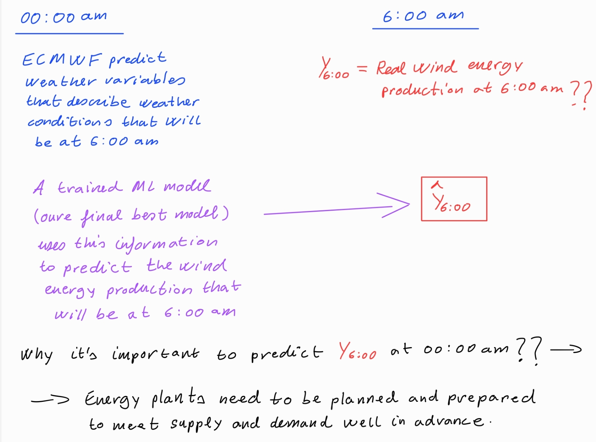
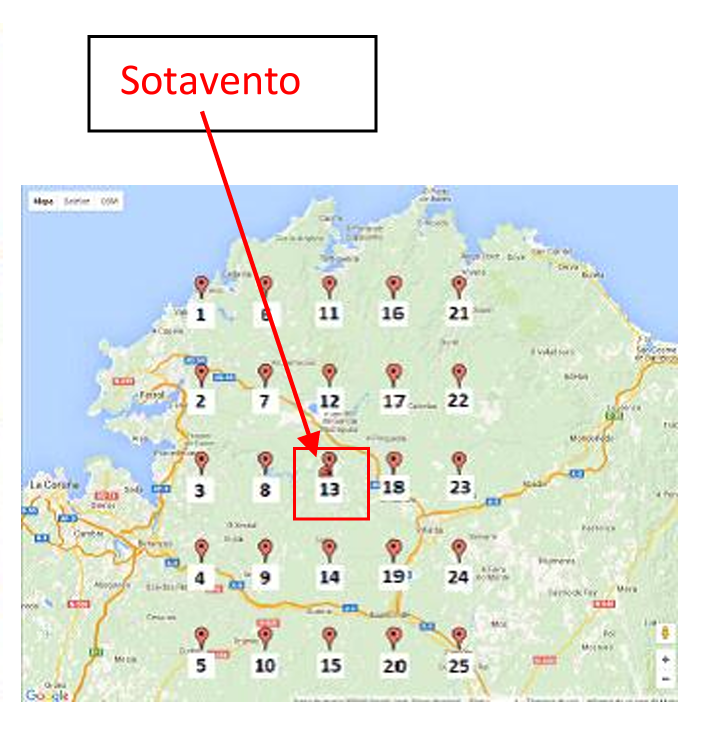
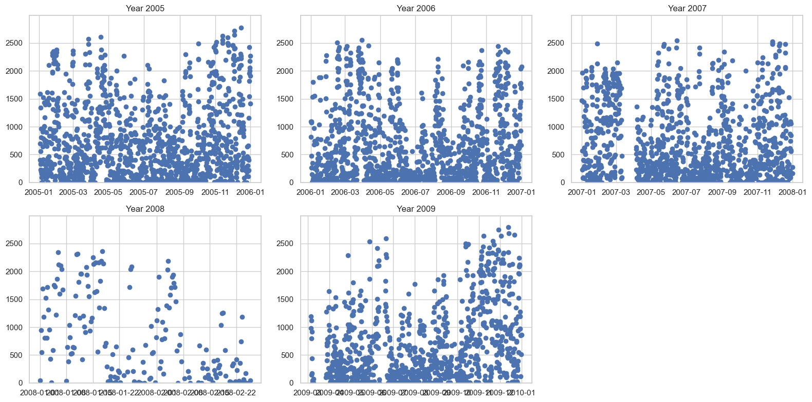
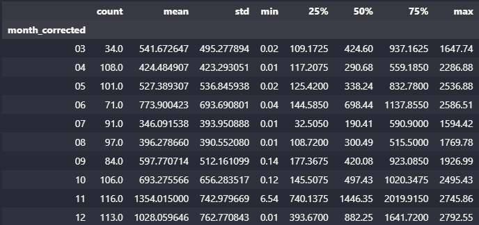
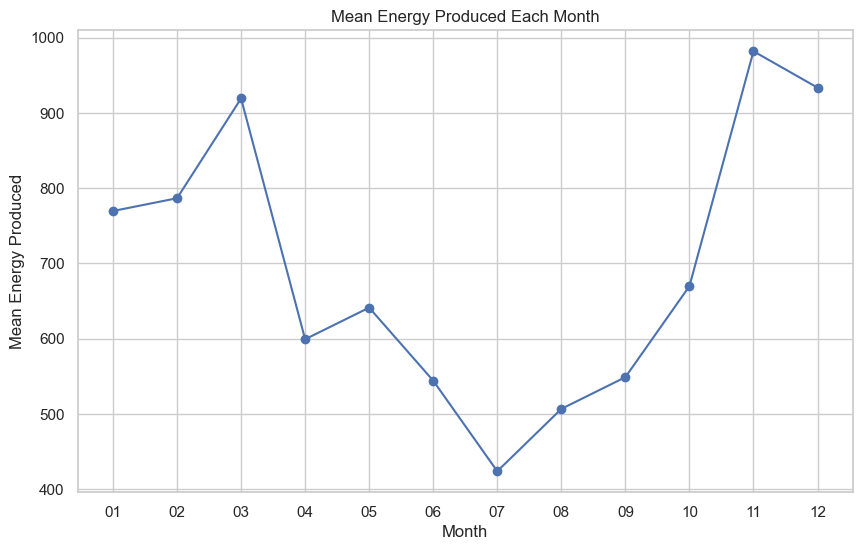
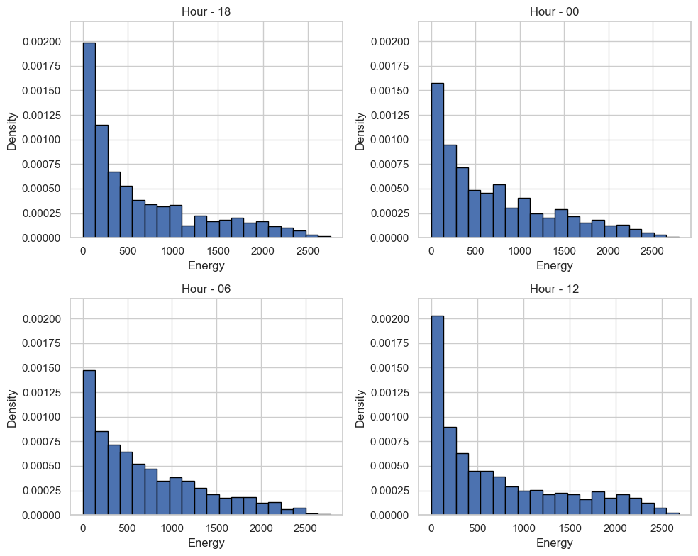
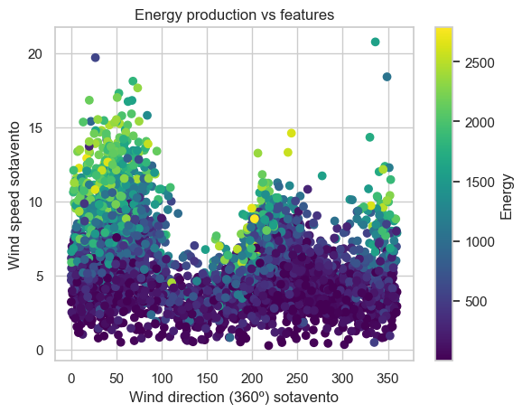
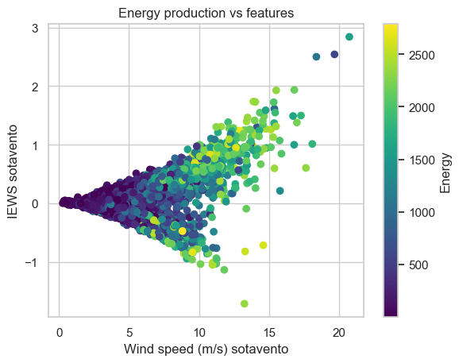
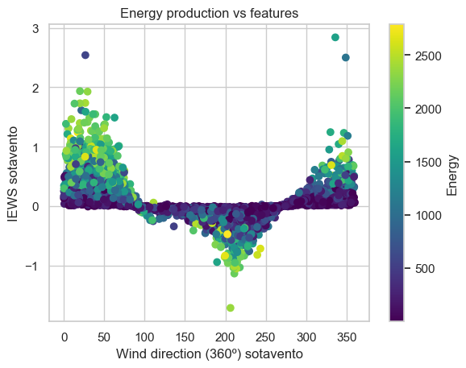

Wind energy production prediction using Machine Learning#
The problem#
The project addresses the integration of non-operable renewable energy sources, like wind energy, into advanced electricity networks. These energy sources, unlike traditional ones such as gas or oil, cannot be controlled directly by operators as they depend on weather conditions. Therefore, accurate forecasting of energy production is crucial. Traditional weather prediction models like the Global Forecast System (GFS, USA) and the European Centre for Medium-Range Weather Forecasts (ECMWF) provide detailed meteorological forecasts, but translating these into exact energy production figures is complex.
To bridge this gap, the project employs machine learning models using meteorological data from ECMWF to predict energy output at the Sotavento experimental wind farm in Spain. The model will process 22 different meteorological variables, including both direct indicators of wind energy potential and other less apparent factors. The project will use a 5x5 grid around Sotavento, analyzing each variable at 25 different locations to create a comprehensive dataset of 550 input attributes.
The lack of specific expertise in wind energy generation and the importance of each meteorological variable led to the inclusion of all 22 variables in the model. Machine learning and attribute selection techniques will help in identifying the most significant variables influencing energy production. The final aim is to develop a machine learning model capable of accurately forecasting electricity generation at Sotavento, aiding in effective and efficient energy planning for the electricity grid.
More concretely, we intend to train a machine learning model \(f\), so that:
Given the 00:00am ECMWF forecast for variables A6:00, B6:00, C6:00, … at 6:00 am (i.e. six hours in advance)
\(f\)(A6:00, B6:00, C6:00, …) = energy = electricity generated at Sotavento at 6:00

22 variables will be used. It is common practice to use the value of those variables, not just at the location of interest (Sotavento in this case), but at points in a grid around Sotavento. A 5x5 grid will be used in this case.
Therefore, each meteorological variable has been instantiated at 25 different locations (location 13 is actually Sotavento). That is why, for instance, attribute iews appears 25 times in the dataset (iews.1, iews.2, …, iews.13, …, iews.25). Therefore, the dataset contains 22*25 = 550 input attributes.

Requirements#
import polars as pl
import pandas as pd
import numpy as np
import gzip
import re
import seaborn as sns
import matplotlib.pyplot as plt
sns.set_style('whitegrid')
from sklearn.model_selection import train_test_split
from sklearn.impute import KNNImputer
from sklearn.neighbors import KNeighborsRegressor
from sklearn.experimental import enable_halving_search_cv
from sklearn.model_selection import HalvingGridSearchCV, cross_val_score
from sklearn.model_selection import GridSearchCV, RandomizedSearchCV
from sklearn.model_selection import PredefinedSplit
from itertools import product
from collections import ChainMap
from sklearn.impute import SimpleImputer
from sklearn.experimental import enable_iterative_imputer
from sklearn.impute import IterativeImputer
from sklearn.tree import DecisionTreeRegressor
from sklearn.ensemble import RandomForestRegressor, GradientBoostingRegressor, HistGradientBoostingRegressor
from xgboost import XGBRegressor
#from skopt import BayesSearchCV
import optuna
import time
from sklearn.base import BaseEstimator, TransformerMixin
from sklearn.pipeline import Pipeline
from sklearn.metrics import r2_score
import joblib
from EDA import dtypes_df, corr_matrix, prop_cols_nulls, prop_row_nulls, summary, histogram, freq_table, quant_to_cat, boxplot, ecdfplot, outliers_table
Conceptual description of the data#
Given a location point (see above map) the following predictor variables has been predicted by ECMWF at specific location point (see above map) and at specific time.
The response variable energy is the real wind energy production.
So, the \(i\)-th observation contains the specific time at which the weather variables (predictors) were forecast 6 hours in advanced by the ECMWF, and the real wind energy production that was 6 hours after that specific time.
The idea is to create the best possible ML model that takes into account the ECMWF variables in a specific time and predict the wind energy production six hours in advanced.
Variable Name |
Description |
Type |
|---|---|---|
|
denotes the 2-meter temperature, which is the temperature at 2 meters above the Earth’s surface at the location |
Quantitative (Predictor) |
|
refers to the 10-meter U-wind component, which is the horizontal speed of air moving towards the east at a height of 10 meters above the location point |
Quantitative (Predictor) |
|
is the 100-meter U-wind component, indicating the horizontal speed of air moving towards the east at a height of 100 meters above the surface at location point |
Quantitative (Predictor) |
|
10-meter V-wind component, which is the horizontal speed of air moving towards the north at a height of 10 meters above the surface at location point |
Quantitative (Predictor) |
|
100-meter V-wind component, similar to |
Quantitative (Predictor) |
|
Convectively Available Potential Energy at location point |
Quantitative (Predictor) |
|
is a measure of surface roughness at location point |
Quantitative (Predictor) |
|
refers to the natural logarithm of the roughness length for heat at location point |
Quantitative (Predictor) |
|
Instantaneous eastward turbulent surface stress at location point |
Quantitative (Predictor) |
|
Instantaneous northward turbulent surface stress at location point |
Quantitative (Predictor) |
|
Leaf area index for high vegetation at location point |
Quantitative (Predictor) |
|
Leaf Area Index for low vegetation at location point |
Quantitative (Predictor) |
|
Neutral wind at 10 meters eastward component, measured in meters per second (m/s). It represents the wind calculated under the assumption of neutral stability in the atmosphere at 10 meters above the ground at location point |
Quantitative (Predictor) |
|
Neutral wind at 10 meters northward component, also in m/s. This is similar to u10n but for the northward direction. |
Quantitative (Predictor) |
|
These denote soil temperature at various levels below the surface, specifically at 0-7 cm, at location point |
Quantitative (Predictor) |
|
These denote soil temperature at various levels below the surface, specifically at 7-28 cm, at location point |
Quantitative (Predictor) |
|
These denote soil temperature at various levels below the surface, specifically at 28-100 cm, at location point |
Quantitative (Predictor) |
|
These denote soil temperature at various levels below the surface, specifically at 100-289 cm, at location point |
Quantitative (Predictor) |
|
Surface Pressure at location point |
Quantitative (Predictor) |
|
is the mass-weighted vertical integral of temperature for a column of air extending from the surface of the Earth at location |
Quantitative (Predictor) |
|
vertical integral of divergence of kinetic energy at location |
Quantitative (Predictor) |
|
vertical integral of water vapour at location |
Quantitative (Predictor) |
|
year in which the predictor variables were forecasted by ECMWF six hours in advanced |
Date |
|
year in which the predictor variables were forecasted by ECMWF six hours in advanced |
Date |
|
year in which the predictor variables were forecasted by ECMWF six hours in advanced |
Date |
|
year in which the predictor variables were forecasted by ECMWF six hours in advanced |
Date |
|
wind energy production 6 hours after the time specified by date variables |
Quantitative (Response) |
After exploring the ECMWF web page, we have spotted some interesting facts:
From the horizontal and vertical measures of wind we can get wind speed and direction (in 360º).
Cape are usually transformed into numerical categories to reflect if they are low, moderate or high. But this is typically used for extreme meteorological events.
flsr and fsr mesure the same thing but in a different scale (log scale vs normal).
iews and inss have direct impact on the flow of the air so it can affect the potential energy produced for a given amount of wind speed and direction.
The variables representing high and low vegetation, lai_hv and lai_lv, may be redundant.
The variables with wind anomalies may also be redundant as they seem to be very similar to the original variables but cenetered.
I doubt that temperatues of soil at 4 different levels with such a small distance between each measured point are all relevant.
All these details will be explored in the future. First, we will train several models with the current variables to see how well they perform and at the end we will do some feature engineering to see if there is some potential improvements.
Reading the data#
with gzip.open('data/wind_available.csv.gzip', 'rt') as f:
wind_df = pd.read_csv(f)
wind_df = pl.from_pandas(wind_df)
wind_df.head(7)
| energy | year | month | day | hour | p54.162.1 | p54.162.2 | p54.162.3 | p54.162.4 | p54.162.5 | p54.162.6 | p54.162.7 | p54.162.8 | p54.162.9 | p54.162.10 | p54.162.11 | p54.162.12 | p54.162.13 | p54.162.14 | p54.162.15 | p54.162.16 | p54.162.17 | p54.162.18 | p54.162.19 | p54.162.20 | p54.162.21 | p54.162.22 | p54.162.23 | p54.162.24 | p54.162.25 | p55.162.1 | p55.162.2 | p55.162.3 | p55.162.4 | p55.162.5 | p55.162.6 | p55.162.7 | … | u100.14 | u100.15 | u100.16 | u100.17 | u100.18 | u100.19 | u100.20 | u100.21 | u100.22 | u100.23 | u100.24 | u100.25 | v100.1 | v100.2 | v100.3 | v100.4 | v100.5 | v100.6 | v100.7 | v100.8 | v100.9 | v100.10 | v100.11 | v100.12 | v100.13 | v100.14 | v100.15 | v100.16 | v100.17 | v100.18 | v100.19 | v100.20 | v100.21 | v100.22 | v100.23 | v100.24 | v100.25 |
|---|---|---|---|---|---|---|---|---|---|---|---|---|---|---|---|---|---|---|---|---|---|---|---|---|---|---|---|---|---|---|---|---|---|---|---|---|---|---|---|---|---|---|---|---|---|---|---|---|---|---|---|---|---|---|---|---|---|---|---|---|---|---|---|---|---|---|---|---|---|---|---|---|---|---|
| f64 | i64 | i64 | i64 | i64 | f64 | f64 | f64 | f64 | f64 | f64 | f64 | f64 | f64 | f64 | f64 | f64 | f64 | f64 | f64 | f64 | f64 | f64 | f64 | f64 | f64 | f64 | f64 | f64 | f64 | f64 | f64 | f64 | f64 | f64 | f64 | f64 | … | f64 | f64 | f64 | f64 | f64 | f64 | f64 | f64 | f64 | f64 | f64 | f64 | f64 | f64 | f64 | f64 | f64 | f64 | f64 | f64 | f64 | f64 | f64 | f64 | f64 | f64 | f64 | f64 | f64 | f64 | f64 | f64 | f64 | f64 | f64 | f64 | f64 |
| 402.71 | 2005 | 1 | 2 | 18 | 2.5350e6 | 2.5269e6 | 2.5188e6 | 2.5106e6 | 2.5025e6 | 2.5311e6 | 2.5227e6 | 2.5143e6 | 2.5059e6 | 2.4975e6 | 2.5281e6 | 2.5194e6 | 2.5108e6 | 2.5022e6 | 2.4936e6 | 2.5256e6 | 2.5168e6 | 2.5080e6 | null | 2.4904e6 | 2.5223e6 | 2.5133e6 | 2.5043e6 | 2.4952e6 | 2.4862e6 | 9.441719 | null | 9.366515 | 9.328574 | 9.290633 | 9.347544 | 9.306893 | … | -1.629377 | -1.47767 | -2.104379 | -1.952148 | null | -1.64821 | -1.495979 | -2.141521 | -1.993476 | -1.844907 | -1.696861 | -1.548292 | -4.801839 | -4.673119 | -4.544897 | -4.416176 | -4.287456 | -4.752946 | null | -4.488519 | -4.355807 | -4.223594 | -4.715028 | null | -4.443617 | -4.307911 | -4.172206 | -4.683596 | null | -4.407196 | null | -4.131295 | -4.669626 | -4.528932 | -4.388736 | -4.24854 | -4.107846 |
| 696.8 | 2005 | 1 | 3 | 0 | null | null | 2.5212e6 | 2.5131e6 | null | 2.5335e6 | 2.5251e6 | 2.5167e6 | 2.5083e6 | 2.5000e6 | 2.5304e6 | 2.5218e6 | 2.5132e6 | 2.5046e6 | 2.4960e6 | 2.5279e6 | 2.5191e6 | 2.5103e6 | 2.5015e6 | 2.4927e6 | 2.5246e6 | 2.5155e6 | 2.5065e6 | 2.4975e6 | null | null | 9.08128 | 9.038596 | 8.995235 | 8.951874 | 9.027078 | 8.979652 | … | -3.583266 | -3.423712 | -4.065591 | null | -3.742297 | -3.580127 | -3.41848 | -4.06873 | -3.908653 | -3.748575 | -3.588497 | -3.42842 | null | null | -3.166389 | -3.034675 | -2.902961 | -3.416845 | -3.28114 | -3.145933 | -3.010228 | null | -3.406368 | -3.268168 | -3.129469 | -2.991269 | -2.85257 | -3.397886 | -3.257192 | -3.115998 | -2.975304 | -2.834609 | -3.39639 | -3.254198 | -3.112506 | -2.970314 | null |
| 1591.15 | 2005 | 1 | 3 | 6 | 2.5337e6 | 2.5257e6 | 2.5177e6 | 2.5097e6 | null | 2.5298e6 | 2.5215e6 | 2.5132e6 | 2.5049e6 | 2.4966e6 | 2.5267e6 | 2.5182e6 | 2.5096e6 | 2.5011e6 | 2.4926e6 | 2.5242e6 | 2.5155e6 | 2.5067e6 | null | 2.4893e6 | 2.5208e6 | 2.5119e6 | 2.5029e6 | 2.4940e6 | 2.4850e6 | 8.200507 | 8.161211 | 8.121237 | 8.081941 | null | 8.097524 | 8.054841 | … | -4.924047 | -4.750891 | -5.395387 | -5.220661 | null | -4.871211 | null | -5.333134 | -5.162594 | -4.992054 | -4.821514 | null | -1.512977 | -1.362803 | -1.212629 | -1.062455 | -0.912281 | -1.489029 | -1.335363 | -1.182195 | -1.029028 | null | -1.469571 | -1.313909 | null | -1.002086 | null | -1.454105 | null | -1.13829 | null | -0.822476 | -1.459094 | -1.302933 | -1.147271 | -0.99111 | -0.834949 |
| 1338.62 | 2005 | 1 | 3 | 12 | null | 2.5265e6 | 2.5186e6 | 2.5107e6 | 2.5027e6 | 2.5306e6 | null | 2.5141e6 | 2.5059e6 | 2.4977e6 | 2.5275e6 | 2.5190e6 | 2.5106e6 | 2.5021e6 | 2.4937e6 | 2.5249e6 | 2.5163e6 | 2.5077e6 | 2.4991e6 | 2.4904e6 | null | 2.5128e6 | 2.5039e6 | null | 2.4862e6 | 7.144935 | 7.119189 | null | 7.06702 | 7.041275 | 7.052792 | 7.025014 | … | -4.404056 | -4.307277 | -4.611739 | -4.511821 | -4.412426 | -4.312509 | -4.213114 | -4.539547 | -4.442245 | -4.344419 | -4.247117 | -4.149292 | 1.319376 | 1.435124 | 1.550374 | 1.666123 | null | 1.292933 | 1.408682 | 1.523932 | 1.639182 | 1.754431 | null | 1.387228 | 1.502478 | 1.617728 | 1.733477 | 1.255015 | 1.370265 | 1.485515 | 1.600765 | 1.716015 | 1.210612 | 1.319376 | 1.42814 | 1.536405 | 1.645169 |
| 562.5 | 2005 | 1 | 3 | 18 | 2.5295e6 | null | 2.5137e6 | 2.5058e6 | 2.4979e6 | 2.5256e6 | 2.5174e6 | 2.5092e6 | 2.5010e6 | 2.4928e6 | null | 2.5141e6 | 2.5057e6 | 2.4972e6 | 2.4888e6 | null | 2.5114e6 | 2.5028e6 | null | 2.4856e6 | 2.5167e6 | 2.5078e6 | 2.4990e6 | 2.4902e6 | 2.4813e6 | 6.861055 | 6.820404 | 6.779075 | 6.738424 | 6.697096 | 6.792626 | 6.748587 | … | -3.332687 | -3.272527 | -3.431035 | -3.369306 | -3.307054 | -3.245324 | null | null | -3.320132 | -3.262065 | -3.203474 | -3.145407 | 2.018858 | 2.106168 | 2.193977 | 2.281288 | 2.368599 | 1.986428 | 2.072741 | 2.159053 | 2.245366 | 2.331679 | 1.960484 | null | 2.131114 | 2.216928 | 2.302243 | 1.939031 | null | null | 2.193977 | 2.278793 | 1.873673 | 1.953 | 2.031829 | 2.111157 | 2.189986 |
| 232.3 | 2005 | 1 | 4 | 0 | 2.5297e6 | 2.5217e6 | 2.5137e6 | 2.5058e6 | 2.4978e6 | 2.5258e6 | 2.5175e6 | 2.5093e6 | 2.5010e6 | 2.4928e6 | 2.5227e6 | 2.5142e6 | 2.5058e6 | 2.4973e6 | 2.4888e6 | 2.5202e6 | 2.5116e6 | 2.5029e6 | 2.4943e6 | 2.4856e6 | 2.5169e6 | 2.5081e6 | 2.4992e6 | 2.4903e6 | 2.4814e6 | 6.454544 | 6.369855 | 6.284488 | 6.199798 | 6.115108 | null | 6.282455 | … | 0.01168 | -0.167231 | null | 0.397226 | null | 0.042021 | -0.135843 | 0.496621 | 0.323465 | 0.150309 | -0.022847 | null | 5.333663 | 5.352123 | 5.370084 | 5.388544 | null | 5.33067 | 5.34464 | 5.358609 | 5.373078 | 5.387048 | 5.327676 | 5.338653 | 5.349629 | 5.360605 | 5.371581 | 5.325681 | 5.334162 | 5.342145 | null | 5.358609 | 5.231884 | 5.236375 | 5.240865 | 5.245854 | 5.250344 |
| 329.95 | 2005 | 1 | 4 | 6 | 2.5273e6 | 2.5193e6 | 2.5114e6 | 2.5034e6 | 2.4954e6 | 2.5235e6 | 2.5152e6 | 2.5070e6 | 2.4987e6 | 2.4904e6 | 2.5204e6 | 2.5120e6 | null | 2.4950e6 | 2.4865e6 | 2.5180e6 | null | 2.5006e6 | 2.4920e6 | null | 2.5147e6 | null | 2.4969e6 | 2.4880e6 | 2.4791e6 | 7.505374 | 7.346835 | 7.188973 | 7.031112 | 6.872573 | 7.42746 | 7.26621 | … | 4.028791 | 3.952414 | 4.159573 | null | 4.00525 | null | null | null | 3.862959 | 3.792336 | 3.722237 | 3.651615 | null | null | 4.619713 | 4.617218 | 4.614724 | 4.627197 | 4.62121 | 4.615223 | 4.609236 | 4.603249 | 4.629691 | 4.620711 | 4.612229 | 4.603249 | 4.594268 | 4.631687 | 4.620711 | 4.609236 | 4.598259 | null | 4.554355 | 4.542381 | 4.530407 | 4.518433 | 4.506459 |
wind_df.tail(7)
| energy | year | month | day | hour | p54.162.1 | p54.162.2 | p54.162.3 | p54.162.4 | p54.162.5 | p54.162.6 | p54.162.7 | p54.162.8 | p54.162.9 | p54.162.10 | p54.162.11 | p54.162.12 | p54.162.13 | p54.162.14 | p54.162.15 | p54.162.16 | p54.162.17 | p54.162.18 | p54.162.19 | p54.162.20 | p54.162.21 | p54.162.22 | p54.162.23 | p54.162.24 | p54.162.25 | p55.162.1 | p55.162.2 | p55.162.3 | p55.162.4 | p55.162.5 | p55.162.6 | p55.162.7 | … | u100.14 | u100.15 | u100.16 | u100.17 | u100.18 | u100.19 | u100.20 | u100.21 | u100.22 | u100.23 | u100.24 | u100.25 | v100.1 | v100.2 | v100.3 | v100.4 | v100.5 | v100.6 | v100.7 | v100.8 | v100.9 | v100.10 | v100.11 | v100.12 | v100.13 | v100.14 | v100.15 | v100.16 | v100.17 | v100.18 | v100.19 | v100.20 | v100.21 | v100.22 | v100.23 | v100.24 | v100.25 |
|---|---|---|---|---|---|---|---|---|---|---|---|---|---|---|---|---|---|---|---|---|---|---|---|---|---|---|---|---|---|---|---|---|---|---|---|---|---|---|---|---|---|---|---|---|---|---|---|---|---|---|---|---|---|---|---|---|---|---|---|---|---|---|---|---|---|---|---|---|---|---|---|---|---|---|
| f64 | i64 | i64 | i64 | i64 | f64 | f64 | f64 | f64 | f64 | f64 | f64 | f64 | f64 | f64 | f64 | f64 | f64 | f64 | f64 | f64 | f64 | f64 | f64 | f64 | f64 | f64 | f64 | f64 | f64 | f64 | f64 | f64 | f64 | f64 | f64 | f64 | … | f64 | f64 | f64 | f64 | f64 | f64 | f64 | f64 | f64 | f64 | f64 | f64 | f64 | f64 | f64 | f64 | f64 | f64 | f64 | f64 | f64 | f64 | f64 | f64 | f64 | f64 | f64 | f64 | f64 | f64 | f64 | f64 | f64 | f64 | f64 | f64 | f64 |
| 1192.65 | 2009 | 12 | 29 | 18 | null | 2.4278e6 | 2.4209e6 | 2.4139e6 | 2.4070e6 | 2.4313e6 | 2.4241e6 | 2.4169e6 | 2.4097e6 | 2.4025e6 | 2.4286e6 | 2.4211e6 | 2.4137e6 | 2.4063e6 | 2.3989e6 | 2.4264e6 | 2.4188e6 | 2.4112e6 | 2.4035e6 | 2.3959e6 | 2.4236e6 | 2.4158e6 | 2.4079e6 | 2.4001e6 | 2.3923e6 | 16.454025 | 16.424892 | 16.395758 | 16.367303 | 16.338169 | 16.506871 | 16.47435 | … | 5.450134 | null | 5.606026 | 5.491461 | null | 5.262853 | 5.148811 | 5.427116 | 5.318828 | 5.210017 | 5.101729 | 4.992919 | 6.359437 | 6.266639 | 6.174339 | 6.08154 | null | null | 6.214751 | null | 6.013688 | 5.912906 | 6.281107 | 6.17384 | 6.066573 | 5.959804 | 5.852537 | 6.252669 | 6.140412 | 6.028156 | 5.9159 | 5.803643 | 6.22922 | 6.11397 | 5.999219 | 5.883969 | null |
| 968.28 | 2009 | 12 | 30 | 0 | 2.4198e6 | 2.4130e6 | 2.4061e6 | 2.3992e6 | 2.3924e6 | 2.4162e6 | 2.4091e6 | 2.4020e6 | 2.3948e6 | 2.3877e6 | 2.4134e6 | 2.4060e6 | 2.3987e6 | 2.3913e6 | 2.3840e6 | 2.4110e6 | 2.4035e6 | 2.3960e6 | 2.3885e6 | 2.3810e6 | 2.4082e6 | 2.4005e6 | 2.3927e6 | 2.3850e6 | 2.3773e6 | 19.033334 | 18.895798 | 18.758939 | 18.621403 | 18.484545 | 19.046884 | 18.902573 | … | 0.982608 | null | 0.956452 | 0.94285 | 0.928726 | 0.914601 | null | 1.179828 | 1.163611 | 1.147394 | 1.130654 | 1.114437 | 7.340807 | 7.180156 | 7.019505 | 6.858853 | 6.698202 | 7.370243 | 7.204603 | 7.038962 | 6.873322 | null | 7.393692 | 7.224061 | 7.054429 | 6.884797 | 6.715664 | 7.412651 | 7.240026 | 7.066902 | 6.894276 | 6.721651 | null | 7.437098 | null | 7.081869 | 6.904255 |
| 1280.13 | 2009 | 12 | 30 | 6 | null | 2.4001e6 | 2.3930e6 | 2.3859e6 | 2.3788e6 | 2.4037e6 | 2.3963e6 | 2.3890e6 | 2.3816e6 | 2.3743e6 | 2.4009e6 | 2.3933e6 | 2.3858e6 | 2.3782e6 | 2.3706e6 | 2.3987e6 | 2.3909e6 | 2.3832e6 | 2.3754e6 | 2.3677e6 | 2.3959e6 | 2.3880e6 | 2.3800e6 | null | 2.3640e6 | 14.99533 | 14.839501 | 14.682994 | 14.526488 | 14.370659 | 14.855084 | 14.693834 | … | 6.874092 | 6.824918 | 6.992843 | 6.939483 | 6.886124 | 6.832765 | 6.779406 | 6.970348 | 6.916989 | 6.86363 | 6.81027 | null | 9.382376 | 9.301552 | 9.221226 | null | null | 9.380381 | 9.289079 | 9.197777 | null | 9.015672 | 9.378884 | 9.279101 | 9.179816 | 9.080033 | 8.980249 | 9.377886 | 9.271118 | 9.164849 | 9.05808 | 8.951312 | 9.402832 | 9.291075 | null | 9.068059 | 8.9568 |
| 855.0 | 2009 | 12 | 30 | 12 | 2.4072e6 | 2.4001e6 | 2.3930e6 | 2.3859e6 | 2.3788e6 | null | 2.3963e6 | 2.3889e6 | 2.3816e6 | 2.3742e6 | 2.4009e6 | 2.3933e6 | 2.3857e6 | 2.3781e6 | 2.3705e6 | null | 2.3909e6 | 2.3831e6 | 2.3753e6 | 2.3676e6 | 2.3958e6 | 2.3878e6 | null | 2.3718e6 | null | 13.241914 | 13.198553 | 13.155192 | 13.112509 | 13.069148 | 13.059662 | 13.008848 | … | 7.371588 | 7.307766 | 7.424424 | 7.353279 | 7.28161 | 7.210464 | 7.139319 | 7.361126 | null | 7.201048 | 7.120486 | null | 6.839395 | 7.023995 | 7.208594 | 7.393194 | 7.577793 | 7.047444 | 7.21957 | 7.392196 | null | null | 7.212087 | 7.374734 | 7.537381 | 7.700028 | 7.862675 | 7.345796 | null | 7.655624 | null | 7.964953 | 7.457055 | 7.604734 | 7.751915 | 7.899595 | 8.047274 |
| 117.06 | 2009 | 12 | 30 | 18 | 2.4010e6 | 2.3937e6 | 2.3863e6 | 2.3790e6 | 2.3716e6 | 2.3975e6 | 2.3899e6 | 2.3823e6 | 2.3746e6 | 2.3670e6 | 2.3947e6 | 2.3869e6 | 2.3790e6 | 2.3712e6 | 2.3634e6 | 2.3924e6 | 2.3844e6 | 2.3764e6 | null | 2.3604e6 | 2.3897e6 | null | 2.3732e6 | 2.3650e6 | 2.3567e6 | 11.266951 | 11.208007 | 11.149063 | 11.090119 | 11.031175 | 11.143643 | 11.081311 | … | 3.018628 | 3.002934 | 2.870059 | 2.851226 | 2.832394 | 2.813561 | 2.794728 | 2.690626 | 2.675455 | 2.660284 | 2.64459 | null | 3.419318 | 3.471206 | 3.523093 | null | 3.627367 | null | 3.497648 | 3.549037 | null | 3.651315 | 3.468212 | 3.518603 | 3.568993 | 3.619384 | 3.669775 | 3.485674 | 3.535566 | 3.585458 | 3.635349 | 3.685241 | 3.505132 | 3.55203 | 3.598429 | 3.645328 | 3.691727 |
| 516.96 | 2009 | 12 | 31 | 12 | 2.3939e6 | 2.3865e6 | 2.3791e6 | 2.3718e6 | 2.3644e6 | null | 2.3826e6 | 2.3750e6 | 2.3673e6 | 2.3597e6 | 2.3874e6 | 2.3796e6 | 2.3717e6 | 2.3638e6 | 2.3560e6 | 2.3851e6 | 2.3771e6 | 2.3690e6 | 2.3610e6 | 2.3530e6 | 2.3822e6 | 2.3740e6 | 2.3657e6 | 2.3574e6 | 2.3492e6 | 13.24869 | 13.254787 | 13.260207 | 13.265628 | 13.271048 | 13.140287 | 13.140964 | … | 7.961678 | 7.548406 | 9.251192 | 8.82955 | 8.408431 | 7.986789 | 7.565146 | 9.297751 | 8.880294 | null | 8.044856 | 7.627399 | 1.769399 | 1.939031 | 2.108663 | 2.278295 | null | 1.859703 | 2.014866 | 2.170528 | 2.325692 | 2.481354 | null | null | 2.219422 | 2.363609 | null | 1.988424 | null | null | null | 2.529749 | 1.960983 | 2.094194 | 2.226906 | 2.360117 | 2.492829 |
| 867.07 | 2009 | 12 | 31 | 18 | 2.3923e6 | 2.3847e6 | 2.3770e6 | 2.3694e6 | 2.3618e6 | 2.3887e6 | 2.3808e6 | 2.3729e6 | 2.3650e6 | 2.3570e6 | 2.3858e6 | 2.3777e6 | 2.3695e6 | 2.3614e6 | 2.3533e6 | 2.3834e6 | 2.3752e6 | 2.3669e6 | 2.3586e6 | 2.3503e6 | 2.3805e6 | null | 2.3635e6 | 2.3550e6 | 2.3464e6 | null | 9.394293 | 9.4031 | 9.412586 | null | 9.27776 | null | … | 7.058757 | 7.013768 | 7.135657 | 7.079159 | 7.022661 | 6.966163 | 6.909665 | 7.119963 | 7.053526 | null | 6.920651 | 6.854213 | null | 1.642674 | 1.607251 | 1.572327 | 1.537402 | 1.831764 | 1.79634 | 1.761416 | null | null | 1.953998 | 1.918575 | 1.883651 | 1.848228 | 1.813304 | 2.052784 | 2.01786 | 1.982437 | 1.947512 | 1.912089 | 2.064259 | 2.031829 | 1.998901 | 1.966471 | 1.934042 |
wind_df.shape
(4748, 555)
EDA#
Variable types#
dtypes= dtypes_df(df=wind_df)
dtypes
| Columns | Python_type |
|---|---|
| str | object |
| "energy" | Float64 |
| "year" | Int64 |
| "month" | Int64 |
| "day" | Int64 |
| "hour" | Int64 |
| "p54.162.1" | Float64 |
| "p54.162.2" | Float64 |
| "p54.162.3" | Float64 |
| "p54.162.4" | Float64 |
| "p54.162.5" | Float64 |
| "p54.162.6" | Float64 |
| "p54.162.7" | Float64 |
| … | … |
| "v100.14" | Float64 |
| "v100.15" | Float64 |
| "v100.16" | Float64 |
| "v100.17" | Float64 |
| "v100.18" | Float64 |
| "v100.19" | Float64 |
| "v100.20" | Float64 |
| "v100.21" | Float64 |
| "v100.22" | Float64 |
| "v100.23" | Float64 |
| "v100.24" | Float64 |
| "v100.25" | Float64 |
Since there are many variables we cannot see their python types at glance. Therefore we are going to count how many variables are of each type and determine who are them.
dtypes_arr = dtypes['Python_type'].to_numpy()
Number of integer (Int64) variables:
num_int64 = np.sum(dtypes_arr == pl.Int64)
num_int64
4
Determining who are these integer variables:
int64_col_index = np.where(dtypes_arr == pl.Int64)[0]
dtypes[int64_col_index,:]
| Columns | Python_type |
|---|---|
| str | object |
| "year" | Int64 |
| "month" | Int64 |
| "day" | Int64 |
| "hour" | Int64 |
Number of float (Float64) variables:
num_float64 = np.sum(dtypes_arr == pl.Float64)
num_float64
551
float64_col_index = np.where(dtypes_arr == pl.Float64)[0]
dtypes[float64_col_index,:]
| Columns | Python_type |
|---|---|
| str | object |
| "energy" | Float64 |
| "p54.162.1" | Float64 |
| "p54.162.2" | Float64 |
| "p54.162.3" | Float64 |
| "p54.162.4" | Float64 |
| "p54.162.5" | Float64 |
| "p54.162.6" | Float64 |
| "p54.162.7" | Float64 |
| "p54.162.8" | Float64 |
| "p54.162.9" | Float64 |
| "p54.162.10" | Float64 |
| "p54.162.11" | Float64 |
| … | … |
| "v100.14" | Float64 |
| "v100.15" | Float64 |
| "v100.16" | Float64 |
| "v100.17" | Float64 |
| "v100.18" | Float64 |
| "v100.19" | Float64 |
| "v100.20" | Float64 |
| "v100.21" | Float64 |
| "v100.22" | Float64 |
| "v100.23" | Float64 |
| "v100.24" | Float64 |
| "v100.25" | Float64 |
There are no more variable types since the sum of those types is equal to the total number of variables:
p = wind_df.shape[1]
p == num_int64 + num_float64
True
Missing values analysis#
prop_cols_nulls(wind_df)
| energy | year | month | day | hour | p54.162.1 | p54.162.2 | p54.162.3 | p54.162.4 | p54.162.5 | p54.162.6 | p54.162.7 | p54.162.8 | p54.162.9 | p54.162.10 | p54.162.11 | p54.162.12 | p54.162.13 | p54.162.14 | p54.162.15 | p54.162.16 | p54.162.17 | p54.162.18 | p54.162.19 | p54.162.20 | p54.162.21 | p54.162.22 | p54.162.23 | p54.162.24 | p54.162.25 | p55.162.1 | p55.162.2 | p55.162.3 | p55.162.4 | p55.162.5 | p55.162.6 | p55.162.7 | … | u100.14 | u100.15 | u100.16 | u100.17 | u100.18 | u100.19 | u100.20 | u100.21 | u100.22 | u100.23 | u100.24 | u100.25 | v100.1 | v100.2 | v100.3 | v100.4 | v100.5 | v100.6 | v100.7 | v100.8 | v100.9 | v100.10 | v100.11 | v100.12 | v100.13 | v100.14 | v100.15 | v100.16 | v100.17 | v100.18 | v100.19 | v100.20 | v100.21 | v100.22 | v100.23 | v100.24 | v100.25 |
|---|---|---|---|---|---|---|---|---|---|---|---|---|---|---|---|---|---|---|---|---|---|---|---|---|---|---|---|---|---|---|---|---|---|---|---|---|---|---|---|---|---|---|---|---|---|---|---|---|---|---|---|---|---|---|---|---|---|---|---|---|---|---|---|---|---|---|---|---|---|---|---|---|---|---|
| f64 | f64 | f64 | f64 | f64 | f64 | f64 | f64 | f64 | f64 | f64 | f64 | f64 | f64 | f64 | f64 | f64 | f64 | f64 | f64 | f64 | f64 | f64 | f64 | f64 | f64 | f64 | f64 | f64 | f64 | f64 | f64 | f64 | f64 | f64 | f64 | f64 | … | f64 | f64 | f64 | f64 | f64 | f64 | f64 | f64 | f64 | f64 | f64 | f64 | f64 | f64 | f64 | f64 | f64 | f64 | f64 | f64 | f64 | f64 | f64 | f64 | f64 | f64 | f64 | f64 | f64 | f64 | f64 | f64 | f64 | f64 | f64 | f64 | f64 |
| 0.0 | 0.0 | 0.0 | 0.0 | 0.0 | 0.078349 | 0.097094 | 0.055392 | 0.066133 | 0.102991 | 0.17797 | 0.182393 | 0.119629 | 0.095198 | 0.057287 | 0.171441 | 0.090775 | 0.183024 | 0.055602 | 0.080666 | 0.049495 | 0.182814 | 0.163648 | 0.186394 | 0.100463 | 0.179655 | 0.165965 | 0.116049 | 0.146799 | 0.125948 | 0.067818 | 0.066344 | 0.155223 | 0.073926 | 0.098989 | 0.062763 | 0.098147 | … | 0.085299 | 0.060236 | 0.135636 | 0.148062 | 0.120051 | 0.110994 | 0.131213 | 0.138374 | 0.096251 | 0.170598 | 0.081087 | 0.125316 | 0.127001 | 0.179865 | 0.117313 | 0.10615 | 0.15754 | 0.084035 | 0.195872 | 0.072662 | 0.181129 | 0.194398 | 0.096462 | 0.161331 | 0.102359 | 0.092039 | 0.081719 | 0.128054 | 0.119419 | 0.153749 | 0.196293 | 0.056445 | 0.054971 | 0.081508 | 0.11984 | 0.121946 | 0.091828 |
prop_row_nulls(wind_df)
array([0.11711712, 0.12792793, 0.12072072, ..., 0.11531532, 0.11891892,
0.11891892])
np.sum(prop_row_nulls(wind_df) > 0)
4748
From the previous results whe know that there are 4748 observations of 555.
All variables except for energy, year, day, month and hour have missing values.
Some variables have more than 20% of missing values. Also, we know that every row has missing values.
Data imputation is going to be very important because we have high dimensionality and also a significant amount of missing variables per observation.
Analysis of the Response#
response = 'energy'
predictors = [x for x in wind_df.columns if x not in [response, 'year', 'day']]
Descriptive summary#
quant_summary, cat_summary = summary(df=wind_df, auto_col=False,
quant_col_names=[response],
cat_col_names=[])
quant_summary
| energy | |
|---|---|
| n_unique | 4543 |
| prop_nan | 0.0 |
| mean | 693.126247 |
| std | 665.531609 |
| min | 0.01 |
| Q10 | 21.46 |
| Q25 | 144.17 |
| median | 465.305 |
| Q75 | 1089.35 |
| Q90 | 1775.66 |
| max | 2792.55 |
| kurtosis | 2.919896 |
| skew | 0.967298 |
| n_outliers | 22 |
| n_not_outliers | 4726 |
| prop_outliers | 0.004634 |
| prop_not_outliers | 0.995366 |
Histogram#
histogram(X=wind_df[response], bins=25, color='purple', figsize=(7,5), random=True, n=500, seed=123, x_rotation=90)
Frequencies#
response_cat = quant_to_cat(wind_df[response], rule='quartiles', n_intervals=4, random_seed=123)
freq_table(X=response_cat)
| energy: unique values | abs_freq | rel_freq | cum_abs_freq | cum_rel_freq |
|---|---|---|---|---|
| object | i64 | f64 | i64 | f64 |
| (-inf, 0.01] | 19 | 0.004 | 19 | 0.004002 |
| (0.01, 144.17] | 1170 | 0.2464 | 1189 | 0.250421 |
| (144.17, 466.34] | 1186 | 0.2498 | 2375 | 0.500211 |
| (466.34, 1089.35] | 1186 | 0.2498 | 3561 | 0.75 |
| (1089.35, 2792.55] | 1187 | 0.25 | 4748 | 1.0 |
Boxplot#
boxplot(X=wind_df[response], color='orange', figsize=(9,5), n_xticks=15, x_rotation=0, statistics=False)
ECDF-plot#
ecdfplot(X=wind_df[response], color='blue', figsize=(9,6))
Outliers#
outliers_table(df=wind_df, auto=False, col_names=[response])
| quant_variables | lower_bound | upper_bound | n_outliers | n_not_outliers | prop_outliers | prop_not_outliers |
|---|---|---|---|---|---|---|
| str | f64 | f64 | i64 | i64 | f64 | f64 |
| "energy" | -1273.6 | 2507.12 | 22 | 4726 | 0.004634 | 0.995366 |
'''
cv_energy = np.std(wind_data.energy.to_numpy()) / np.mean(wind_data.energy.to_numpy())
print(f'Coefficient of variance energy produced: {100*cv_energy:.4f}%')
'''
Coefficient of variance energy produced: 96.01%
The response has a very high coefficient of variance (> 96%). Around 50% of the observations have an energy production of 500 or less, and the other half take values up to 2800. With a high coefficient of variance, if we apply RMSE our models will be very influenced by these extreme values.
Time series analysis#
Autocorrelation#
Next, we know that our response has been measured everyday at 4 different moments every 6 hours. We are going to analyze if there is correlation between the response and it’s lag. We expect some because the response depends on several meteorological events, and during a day it can vary a lot, but, usually, if there are high winds at a given hour, most probably there will be at t + 6 hours.
'''
def correct_hour_day_month(x):
return f'0{x}' if len(x) == 1 else f'{x}'
wind_data.hour = wind_data.hour.astype(str)
wind_data.day = wind_data.day.astype(str)
wind_data.month = wind_data.month.astype(str)
wind_data.year = wind_data.year.astype(str)
wind_data['hour_corrected'] = wind_data.hour.apply(correct_hour_day_month)
wind_data['day_corrected'] = wind_data.day.apply(correct_hour_day_month)
wind_data['month_corrected'] = wind_data.month.apply(correct_hour_day_month)
wind_data['fecha'] = wind_data.apply(lambda row: pd.to_datetime(f'{row.day_corrected}-{row.month_corrected}-{row.year} {row.hour_corrected}:00', format='%d-%m-%Y %H:%M'), axis=1)
wind_data = wind_data.drop(['month', 'day', 'hour'], axis=1)
wind_data = wind_data.sort_values(by='fecha')
wind_data['energy_lag'] = wind_data['energy'].shift()
# Create a scatter plot
plt.scatter(wind_data['energy'].iloc[1:], wind_data['energy_lag'].iloc[1:])
plt.xlabel('Energy')
plt.ylabel('Energy Lag')
plt.title('Energy production vs its preceding observation')
plt.show()
print('Linear correlation Energy vs lag: {:.4f}'.format(wind_data["energy"].iloc[1:].corr(wind_data["energy_lag"].iloc[1:])))
wind_data = wind_data.drop('energy_lag', axis=1)
'''

The linear correlation is obvious. This will affect the way we do the inner and outer evaluation of the models as we can’t use random sampling because our model would return overconfident test performance metrics and the selection of hyperparameters would be done with a bias.
Statistics by year#
Next, in order to decide how to do the inner and outer evaluation, we are going to analyze the timeserie of the response. First we want to look at the years. The idea is to check if all follow a similar distribution and count the number of observations. Second, we want to look at the months to see if the amount of energy produced is independent of the month or not.
'''
# Statistics for each year
energy_stats_by_year = wind_data.groupby('year')['energy'].describe()
print(energy_stats_by_year)
'''
'''
# OUTPUT
count mean std min 25% 50% 75% \
year
2005 1256.0 718.697078 669.357880 0.01 173.1775 515.745 1098.3100
2006 1272.0 635.094505 656.110591 0.01 97.8425 393.630 999.6725
2007 1121.0 707.736753 653.687550 0.01 160.1400 476.100 1131.9600
2008 178.0 829.901685 738.224964 0.02 155.2150 613.125 1443.2225
2009 921.0 694.184886 667.122141 0.01 156.9100 467.030 1060.9700
max
year
2005 2774.89
2006 2552.41
2007 2547.09
2008 2363.49
2009 2792.55
'''
'''
# ANOVA for '05, '06 an d'07
f_statistic, p_value = stats.f_oneway(energy_stats_by_year[energy_stats_by_year.index.isin(['2005', '2006', '2007'])]['mean'], energy_stats_by_year[energy_stats_by_year.index.isin(['2005', '2006', '2007'])]['std'], energy_stats_by_year[energy_stats_by_year.index.isin(['2005', '2006', '2007'])]['count'])
alpha = 0.01
if p_value < alpha:
print(f"Reject the null hypothesis. There is a significant difference in means for 2005, 2006 and 2007.")
else:
print("Fail to reject the null hypothesis. There is no significant difference in means for 2005, 2006 and 2007.")
'''
Reject the null hypothesis. There is a significant difference in means for 2005, 2006 and 2007.
'''
# Plot the timeserie of each year
years = range(2005, 2010)
wind_data_years = [wind_data[(wind_data['fecha'] >= pd.to_datetime(f'{year}-01-01')) & (wind_data['fecha'] < pd.to_datetime(f'{year + 1}-01-01'))] for year in years]
max_energy = max(data['energy'].max() for data in wind_data_years) + 200 # Get the max to fix the y_lim range in all plots
fig, axes = plt.subplots(2, 3, figsize=(16, 8))
for ax, data, year in zip(axes.flatten(), wind_data_years, years):
ax.scatter(data['fecha'], data['energy'])
ax.set_title(f'Year {year}')
ax.set_ylim(0, max_energy)
axes[1, 2].axis('off') # Hide empty subplot
plt.tight_layout()
plt.show()
'''

The plots and statistics reveal several things:
We have a smaller sample for 2008 and 2009, especially 2008 (178 observations)
Altough the ANOVA test for ‘05, ‘06 and ‘07 has revealed evidence that the means are different, the distributions are similar if we look at the quantiles
Some years have a smaller sample of data in certain months
2008 has data only until February
2009 has no data before March and the last two months of the year have very high mean and median
With this, we know that we have to be careful when partitioning the years for training, testing and validation because we could end up validating and/or testing on years with no data for a given month, thus, introducing a bias.
Next, we look at the months.
'''
# Distribution of Energy for each month in 2009
wind_data[(wind_data['fecha'] >= pd.to_datetime(f'2009-01-01')) & (wind_data['fecha'] < pd.to_datetime(f'2010-01-01'))].groupby('month_corrected')['energy'].describe()
'''

'''
# Statistics per month
energy_stats_by_month = wind_data.groupby('month_corrected')['energy'].describe()
print(energy_stats_by_month)
'''
'''
# OUTPUT
count mean std min 25% 50% \
month_corrected
01 414.0 769.640459 706.303381 0.01 150.8850 537.290
02 373.0 786.625228 681.911100 0.02 164.8400 592.520
03 306.0 919.219150 748.412370 0.02 213.8775 774.600
04 413.0 599.231671 583.613640 0.01 147.0100 409.530
05 426.0 641.243310 626.290574 0.02 131.8125 415.400
06 357.0 544.173754 572.353719 0.01 103.2300 321.130
07 384.0 423.834323 486.443940 0.01 63.9275 206.095
08 440.0 506.656523 510.917812 0.01 98.7075 359.645
09 368.0 548.853288 556.973683 0.02 117.0850 351.715
10 412.0 669.815024 628.326946 0.01 145.1450 494.800
11 432.0 981.925069 767.750402 0.01 286.9400 792.305
12 423.0 933.576738 766.851606 0.01 262.0750 754.500
75% max
month_corrected
01 1305.3700 2492.47
02 1309.7100 2508.97
03 1584.8550 2574.03
04 909.3300 2610.74
05 1066.1825 2536.88
06 845.1900 2586.51
07 671.9600 2415.42
08 734.7050 2214.61
09 839.7450 2344.45
10 1023.1700 2495.43
11 1571.6550 2745.86
12 1533.1950 2792.55
'''
'''
plt.figure(figsize=(10, 6))
plt.plot(energy_stats_by_month.reset_index()['month_corrected'], energy_stats_by_month['mean'], marker='o', linestyle='-', color='b')
plt.xlabel('Month')
plt.ylabel('Mean Energy Produced')
plt.title('Mean Energy Produced Each Month')
plt.grid(True)
plt.show()
'''

'''
# ANOVA by month
f_statistic, p_value = stats.f_oneway(energy_stats_by_month['mean'], energy_stats_by_month['std'], energy_stats_by_month['count'])
alpha = 0.01
if p_value < alpha:
print(f"Reject the null hypothesis. There is a significant difference in the means of each month.")
else:
print("Fail to reject the null hypothesis. There is no significant difference in the means of each month.")
'''
Reject the null hypothesis. There is a significant difference in the means of each month.
The energy produced is not independent of the month. March, November and December seem to be the ones when the most energy is produced. This is very important because it is telling us that when training and testing, we should do it with full years, or at least, having data from all months. Also, we have to account for the autocorrelation of the response so that no random sampling is allowed.
Having years with no data in some months, and other years with a much smaller sample of data suggests that k-fold crossvalidation has to be taken with ease, specially when \(k\) big because we could end up training with no data for some months, or testing with missing months and other scenarios that can be biased and non-robust estimations of future performance and best hyperparameters.
Last, we look at the distribution of energy produced by the 4 different hours that we have.
'''
fig, axes = plt.subplots(2, 2, figsize=(10, 8))
hour_values = wind_data.hour_corrected.unique().tolist()
for hour, ax in zip(hour_values, axes.flatten()):
subset = wind_data[wind_data['hour_corrected'] == hour]
ax.hist(subset['energy'], bins=20, edgecolor='black', density=True)
ax.set_title(f'Hour - {hour}')
ax.set_xlabel('Energy')
ax.set_ylabel('Density')
ax.set_ylim(0, 0.0022)
plt.tight_layout()
plt.show()
'''

The energy production seems to be independent of the hour of the day.
Analysis of relationship between Response and Predictors#
In this section we are going to analyze the correlation between the response an the predictors, as well as between the predictors itself. All of the are quantitative, therefore we will use the Pearson linear correlation coefficient to measure this.
Since we have a set of predictors per location, we will be focus in one of them, for example Sotavento location (13).
After that we will explore if there are significative differences in these correlation depending on the location.
num_locations = 25
predictors_location = dict()
for j in range(0, num_locations):
predictors_location[j+1] = [x for x in wind_df[predictors].columns if re.search(rf'\.{j+1}(?![0-9])', x)]
predictors_not_loc = [x.rsplit('.', 1)[0] for x in predictors_location[1]]
corr_matrix_loc = dict()
for j in range(0, num_locations):
corr_matrix_loc[j+1] = corr_matrix(df=wind_df[[response] + predictors_location[j+1]], auto_col=True, method='pearson')
corr_matrix_loc[j+1].columns = [response] + predictors_not_loc
corr_matrix_loc[j+1].index = [response] + predictors_not_loc
fig = plt.subplots(figsize=(15,10))
ax = sns.heatmap(corr_matrix_loc[13], cmap="Blues", annot=True)
ax.set(xlabel="", ylabel="")
ax.xaxis.tick_top()
ax.set_xticklabels(ax.get_xticklabels(), rotation=90)
ax.set_yticklabels(ax.get_xticklabels(), rotation=0)
plt.title(label = 'Correlation Heatmap - Location 13 (Sotavento)', fontsize=15)
#plt.savefig('Correlation_Heatmap_Location_13' + '.jpg', format='jpg', dpi=400)
plt.show()
Let’s take a look to the correlation between response a predictors with more detail:
corr_loc = dict()
for j in range(0, num_locations):
corr_loc[j+1] = corr_matrix(df=wind_df, response='energy', predictors=predictors_location[j+1], method='pearson')
fig = plt.subplots(figsize=(5,10))
ax = sns.heatmap(corr_loc[13], cmap="Blues", annot=True)
ax.set(xlabel="", ylabel="")
ax.xaxis.tick_top()
ax.set_xticklabels(ax.get_xticklabels(), rotation=0, fontsize=12)
ax.set_yticklabels(ax.get_yticklabels(), rotation=0)
plt.title('Correlation Heatmap - Location 13 (Sotavento)', fontsize=13)
#plt.savefig('Correlation_Heatmap_Location_13_response' + '.jpg', format='jpg', dpi=400)
plt.show()
Now we are going to analyze if there are differences in the correlation between response and predictors explained by the location.
n_cols = 4
n_rows = int(np.ceil(num_locations/n_cols))
fig, axes = plt.subplots(n_rows, n_cols, figsize=(22,20))
axes = axes.flatten()
colors = sns.color_palette("tab10", num_locations)
for j, color in zip(range(0, num_locations), colors) :
ax = axes[j]
sns.lineplot(y=corr_loc[j+1]['energy'].values, x=predictors_not_loc, ax=ax, color=color)
ax.tick_params(axis='x', rotation=90)
ax.set_title(f'Location {j+1}', fontsize=11)
ax.set_xlabel('Predictors')
ax.set_ylabel('Corr(Energy, Predictors)')
for j in range(num_locations, n_rows * n_cols):
fig.delaxes(axes[j])
plt.suptitle('Corr(Energy, Predictors) by locations', fontsize=15, y=0.92)
plt.subplots_adjust(hspace=0.9, wspace=0.4)
#fig.savefig('Corr(Energy, Predictors)_Locations' + '.jpg', format='jpg', dpi=400)
plt.show()
The plot is pretty clear, there are no significant differences in the correlation between the response (
energy) and the rest of predictors depending on the location.
Now we are going to do a similar analysis but to explore if there are differences in the correlation between predictors explained by the location.
n_cols = 4
n_rows = int(np.ceil(num_locations/n_cols))
colors = sns.color_palette("tab10", num_locations)
limits = np.arange(0, len(predictors_not_loc) + 5, 5)
for i in range(0, len(limits)-1):
subset_predictors = predictors_not_loc[limits[i]:limits[i+1]]
fig, axes = plt.subplots(n_rows, n_cols, figsize=(22,20))
axes = axes.flatten()
for j in range(0, num_locations) :
ax = axes[j]
for col, color in zip(subset_predictors, colors) :
sns.lineplot(y=corr_matrix_loc[j+1][col][1:].values, x=predictors_not_loc, ax=ax, color=color, label=col)
ax.tick_params(axis='x', rotation=90)
ax.set_title(f'Location {j+1}', fontsize=11)
ax.set_xlabel('Predictors')
ax.set_ylabel(f'Corr(Predictor[{limits[i]}:{limits[i+1]}], Predictors)')
ax.get_legend().remove() # Remove individual subplot legends
for j in range(num_locations, n_rows * n_cols):
fig.delaxes(axes[j])
plt.suptitle(f'Corr(Predictor[{limits[i]}:{limits[i+1]}], Predictors) by locations', fontsize=17, y=0.92)
plt.subplots_adjust(hspace=0.9, wspace=0.4)
handles, labels = ax.get_legend_handles_labels()
fig.legend(handles, subset_predictors, loc='lower center', bbox_to_anchor=(0.5, 0.1), ncol=len(subset_predictors), fontsize=15)
#fig.savefig(f'Corr(Predictor[{limits[i]}-{limits[i+1]}], Predictors)_Locations' + '.jpg', format='jpg', dpi=400)
plt.show()
As before, plots are very informative an illustrate that there are not significative difference in the correlation between response and predictors due to location.
EDA conclusions and things to take care of#
Some conclusions from all the previous results:
We have a small dataset (4748 observations) and there is high dimensionality with a lot of missing cells. We can not afford to loose observations so data imputation is going to be crucial.
The variable we want to predict, energy, has a very high right-skeewed distribution, but, tree-based models are robust to skeewed distributions. This may affect the metric we use (RMSE for instance).
The response has autocorrelation and the energy produced depends on the month. This affects the type of validation and testing implentation. No random sampling allowed and we need to ensure having data from all months in trainning, validation and testing.
There are years with missing data for certain months and 2008 has only 178 observations.
The information obtained from the ECMWF web page suggests that we could create new variables and remove others.
All variables are numeric.
Lots of features with normal-ish distribution. But the ranges of the features vary a lot. For KNN it will be necessary to standarize.
About the relations between the features and the response, there are some non-linear relations, but most of the graphs are distorted by the different scales, nothing clear in this point.
As for the correlation between features, most of them seem to have very week positive or negative linear correlations meaning that they could have other type of relation or not at all. There are some packs of variables with very high positive correlation (>=0.9) suggesting that we could reduce the feature space in some way.
All of this will constraint how we design the validation and testing of our models. Also, gives us some ideas on how we could improve the performance of our models with scaling and some feature engineering and reduce dimensionality.
Train-Test Split#
train_years = [2005, 2006, 2007]
test_years = [2008, 2009]
wind_df_train = wind_df.filter(pl.col('year').is_in(train_years))
wind_df_test = wind_df.filter(pl.col('year').is_in(test_years))
X = wind_df.select(predictors)
Y = wind_df[response]
X_train = wind_df_train.select(predictors)
Y_train = wind_df_train[response]
X_test = wind_df_test.select(predictors)
Y_test = wind_df_test[response]
X_years = wind_df['year'].to_numpy()
X_train_years = wind_df_train['year'].to_numpy()
Pipeline definition#
Initial functions from which we have been inspired to create the final pipeline.
'''
def only_wind(X, type) :
if type == True :
wind_predictors = [x for x in X.columns if any(x.startswith(y) for y in ['u', 'v', 'wind', 'air'])]
return X[wind_predictors]
else :
return X
'''
'''
def only_sotavento(X, type):
predictors_location_13 = [x for x in X.columns if re.search(rf'\.{13}(?![0-9])', x)]
if type == True :
return X[predictors_location_13]
else:
return X
'''
'''
def feature_engineering(X, type):
if type == True :
X = X.with_columns(np.sqrt(X['u10.13']**2 +X['v10.13']**2).alias('wind_speed.13'))
X = X.with_columns(np.degrees(np.arctan2(X['v10.13'], X['u10.13'])).alias('wind_direction.13'))
X = X.with_columns(((X['wind_direction.13'] + 360) % 360).alias('wind_direction.13'))
X = X.with_columns((X['sp.13'] / (287 * X['t2m.13'])).alias('air_density.13'))
return X
elif type == False:
return X
'''
Now we are going to define several transformers to include in our pipeline.
The following transformer performs imputation through different imputation methods, when it is activate.
class imputation(BaseEstimator, TransformerMixin):
def __init__(self, method='no_imputation'):
self.method = method
def fit(self, X, y=None):
if self.method == 'no_imputation':
self.imputer = None
elif self.method in ['simple_mean', 'simple_median']:
self.imputer = SimpleImputer(missing_values=np.nan, strategy=self.method.split('_')[1])
elif self.method == 'knn':
self.imputer = KNNImputer(n_neighbors=1, weights="uniform")
elif self.method in ['iterative_mean', 'iterative_median']:
self.imputer = IterativeImputer(initial_strategy=self.method.split('_')[1], n_nearest_features=4, max_iter=15, random_state=123)
else:
raise ValueError("Invalid method for imputation")
if self.imputer is not None:
self.imputer.fit(X)
return self
def transform(self, X):
if self.imputer is not None:
X_column_names = X.columns
X = self.imputer.transform(X)
X = pl.from_numpy(X)
X.columns = X_column_names
return X
The following transformer select the wind predictors from the given data-set when it is activate.
class only_wind(BaseEstimator, TransformerMixin):
def __init__(self, apply=False):
# Initialize with the parameter that decides whether to select wind features or not
self.apply = apply
def fit(self, X, y=None):
# This transformer does not need to learn anything from the data, so the fit method just returns self
return self
def transform(self, X):
if self.apply == True:
wind_predictors = [x for x in X.columns if any(x.startswith(y) for y in ['u', 'v', 'wind', 'air'])]
return X[wind_predictors]
elif self.apply == False:
return X
The following transformer select the Sotavento predictors from the given data-set when it is activate.
class only_sotavento(BaseEstimator, TransformerMixin):
def __init__(self, apply=False):
# Initialize with the parameter that decides whether to select wind features or not
self.apply = apply
def fit(self, X, y=None):
# This transformer does not need to learn anything from the data, so the fit method just returns self
return self
def transform(self, X):
if self.apply == True:
predictors_location_13 = [x for x in X.columns if re.search(rf'\.{13}(?![0-9])', x)]
return X[predictors_location_13]
elif self.apply == False:
return X
The following transformer applies feature engineering to the given data-set when it is activate.
After doing some research we came up with a way to obtain wind speed and direction from our variables. Using the horizontal and vertical measurements of the wind we can obtain these new variables.
Now, the question is if we need to create these new variables for the 3 types of wind measurements (al 10 meters, 100 meters and te anomalies with respect to the mean) or not. We looked at the dimensions of wind turbines in late 1990s and found that for wind turbines of 750 kw the typical height was 50m for the base and including the blades up to 70-75 meters. This suggests that it would be better to use the measurements at 100m rather than those at 10 meters. Also, a very important factor, the measurements of wind at 100 meters have less missing values. This is very important because this means less cells to impute and less potential noise added due to the imputation.
For these reasons we will perform the feature engineering with the wind measurements at 100m only.
class feature_engineering(BaseEstimator, TransformerMixin):
def __init__(self, apply=False):
# Initialize with the parameter that decides whether to select wind features or not
self.apply = apply
def fit(self, X, y=None):
# This transformer does not need to learn anything from the data, so the fit method just returns self
return self
def transform(self, X):
if self.apply == True :
wind_to_drop = [col for col in X.columns if "u10." in col or "v10." in col or "u10n" in col or "v10n" in col]
fsr_laihv_cape_to_drop = [col for col in X.columns if "fsr" in col or "lai_lv" in col or "cape" in col]
stl_to_drop = [col for col in X.columns if "stl" in col]
p_vars_only_sotavento = [col for col in X.columns if "p" in col and "162" in col and not col.endswith("13")]
cols_to_drop = wind_to_drop + fsr_laihv_cape_to_drop + stl_to_drop + p_vars_only_sotavento
cols_to_keep = [x for x in X.columns if x not in cols_to_drop]
X = X[cols_to_keep]
X = X.with_columns(np.sqrt(X['u100.13']**2 +X['v100.13']**2).alias('wind_speed.13'))
X = X.with_columns(np.degrees(np.arctan2(X['v100.13'], X['u100.13'])).alias('wind_direction.13'))
X = X.with_columns(((X['wind_direction.13'] + 360) % 360).alias('wind_direction.13'))
return X
elif self.apply == False:
return X
Below, we create these new variables without imputation just to have some visual representation on how they aid in discriminating higher and lower values of the response. First we will plot both together and then with the variable iews that we know has direct impact in the flow of wind.
'''
wind_data['windSpeed'] = wind_data.apply(lambda row: sqrt((row['u100.13']**2)+(row['v100.13']**2)), axis=1)
wind_data['wind_direction'] = np.degrees(np.arctan2(wind_data['v100.13'], wind_data['u100.13']))
wind_data['wind_direction'] = (wind_data['wind_direction'] + 360) % 360 # Convert to 360º scale
plt.scatter(wind_data['wind_direction'].iloc[1:], wind_data['windSpeed'].iloc[1:], c=wind_data['energy'].iloc[1:], cmap='viridis')
plt.xlabel('Wind direction (360º) sotavento')
plt.ylabel('Wind speed sotavento')
plt.title('Energy production vs features')
# Add colorbar for reference
cbar = plt.colorbar()
cbar.set_label('Energy')
plt.show()
'''

The plot above suggets that higher wind speed tend to generate more energy, but this energy production is dependent on the wind direction.
Looking at the wind’s direction, when it blows from 100º-150º (North-West) very little energy is produced in general and the same happens when it blows in direction 250º-320º (South, South-East). Most of the high energy production observations appear with wind directions between 0º-90º (East, Nort-East, North), the first quadrant, and wind speeds of 8m/s or higher.
'''
plt.scatter(wind_data['windSpeed'].iloc[1:], wind_data['iews.13'].iloc[1:], c=wind_data['energy'].iloc[1:], cmap='viridis')
plt.xlabel('Wind speed (m/s) sotavento')
plt.ylabel('IEWS sotavento')
plt.title('Energy production vs features')
# Add colorbar for reference
cbar = plt.colorbar()
cbar.set_label('Energy')
plt.show()
'''

'''
plt.scatter(wind_data['wind_direction'].iloc[1:], wind_data['iews.13'].iloc[1:], c=wind_data['energy'].iloc[1:], cmap='viridis')
plt.xlabel('Wind direction (360º) sotavento')
plt.ylabel('IEWS sotavento')
plt.title('Energy production vs features')
# Add colorbar for reference
cbar = plt.colorbar()
cbar.set_label('Energy')
plt.show()
'''

Both plots above suggest that there is a non-linear relation between the turbulence factor on wind and the speed and direction of the wind. Seems like the new variables work well together and also with other variables in the dataset. Nevertheless, the relations are not cristal clear and there is some obvious noise in the data so we will include more variables in our future analysis.
We are going to remove these new variables because the idea is to add them after imputing the existing variables in a pipeline step.
Testing the pipeline#
In this section we are going to define several pipelines using the above transformers and we will test them, in order to make sure them work well.
pipeline = Pipeline([
('imputation', imputation()),
('feature_engineering', feature_engineering()),
('only_wind', only_wind()),
('only_sotavento', only_sotavento())
])
pipeline.set_params(imputation__method='simple_mean', feature_engineering__apply=True, only_wind__apply=False, only_sotavento__apply=False)
pipeline.fit(X=X_train)
pipeline.transform(X=X_train)
| month | hour | p54.162.13 | p55.162.13 | p59.162.13 | lai_hv.1 | lai_hv.2 | lai_hv.3 | lai_hv.4 | lai_hv.5 | lai_hv.6 | lai_hv.7 | lai_hv.8 | lai_hv.9 | lai_hv.10 | lai_hv.11 | lai_hv.12 | lai_hv.13 | lai_hv.14 | lai_hv.15 | lai_hv.16 | lai_hv.17 | lai_hv.18 | lai_hv.19 | lai_hv.20 | lai_hv.21 | lai_hv.22 | lai_hv.23 | lai_hv.24 | lai_hv.25 | sp.1 | sp.2 | sp.3 | sp.4 | sp.5 | sp.6 | sp.7 | … | u100.16 | u100.17 | u100.18 | u100.19 | u100.20 | u100.21 | u100.22 | u100.23 | u100.24 | u100.25 | v100.1 | v100.2 | v100.3 | v100.4 | v100.5 | v100.6 | v100.7 | v100.8 | v100.9 | v100.10 | v100.11 | v100.12 | v100.13 | v100.14 | v100.15 | v100.16 | v100.17 | v100.18 | v100.19 | v100.20 | v100.21 | v100.22 | v100.23 | v100.24 | v100.25 | wind_speed.13 | wind_direction.13 |
|---|---|---|---|---|---|---|---|---|---|---|---|---|---|---|---|---|---|---|---|---|---|---|---|---|---|---|---|---|---|---|---|---|---|---|---|---|---|---|---|---|---|---|---|---|---|---|---|---|---|---|---|---|---|---|---|---|---|---|---|---|---|---|---|---|---|---|---|---|---|---|---|---|---|---|
| f64 | f64 | f64 | f64 | f64 | f64 | f64 | f64 | f64 | f64 | f64 | f64 | f64 | f64 | f64 | f64 | f64 | f64 | f64 | f64 | f64 | f64 | f64 | f64 | f64 | f64 | f64 | f64 | f64 | f64 | f64 | f64 | f64 | f64 | f64 | f64 | f64 | … | f64 | f64 | f64 | f64 | f64 | f64 | f64 | f64 | f64 | f64 | f64 | f64 | f64 | f64 | f64 | f64 | f64 | f64 | f64 | f64 | f64 | f64 | f64 | f64 | f64 | f64 | f64 | f64 | f64 | f64 | f64 | f64 | f64 | f64 | f64 | f64 | f64 |
| 1.0 | 18.0 | 2.5108e6 | 9.186295 | 1.6275e6 | 2.336301 | 2.242958 | 2.239505 | 2.236064 | 2.232612 | 2.354674 | 2.351065 | 2.347445 | 2.343836 | 2.340227 | 2.440469 | 2.436726 | 2.432983 | 2.597243 | 2.425486 | 2.510131 | 2.506276 | 2.502422 | 2.498567 | 2.494724 | 2.537515 | 2.531817 | 2.526119 | 2.520421 | 2.706869 | 100691.101045 | 100414.200563 | 100137.300081 | 97860.970883 | 99583.499117 | 100548.40153 | 100261.734059 | … | -2.104379 | -1.952148 | 0.186532 | -1.64821 | -1.495979 | -2.141521 | -1.993476 | -1.844907 | -1.696861 | -1.548292 | -4.801839 | -4.673119 | -4.544897 | -4.416176 | -4.287456 | -4.752946 | 0.093998 | -4.488519 | -4.355807 | -4.223594 | -4.715028 | 0.109453 | -4.443617 | -4.307911 | -4.172206 | -4.683596 | 0.094171 | -4.407196 | 0.263704 | -4.131295 | -4.669626 | -4.528932 | -4.388736 | -4.24854 | -4.107846 | 4.78708 | 248.163973 |
| 1.0 | 0.0 | 2.5132e6 | 8.849569 | 1.1535e6 | 2.246332 | 2.242857 | 2.239371 | 2.235908 | 2.232422 | 2.354607 | 2.350953 | 2.347311 | 2.343669 | 2.340026 | 2.440391 | 2.436615 | 2.576445 | 2.429062 | 2.425285 | 2.510053 | 2.630269 | 2.502277 | 2.498389 | 2.494512 | 2.537448 | 2.654287 | 2.525985 | 2.690554 | 2.514522 | 100761.118941 | 100485.867431 | 100210.615921 | 99935.364411 | 99660.112902 | 98519.961799 | 98251.997369 | … | -4.065591 | 0.216299 | -3.742297 | -3.580127 | -3.41848 | -4.06873 | -3.908653 | -3.748575 | -3.588497 | -3.42842 | 0.100978 | 0.058969 | -3.166389 | -3.034675 | -2.902961 | -3.416845 | -3.28114 | -3.145933 | -3.010228 | 0.223252 | -3.406368 | -3.268168 | -3.129469 | -2.991269 | -2.85257 | -3.397886 | -3.257192 | -3.115998 | -2.975304 | -2.834609 | -3.39639 | -3.254198 | -3.112506 | -2.970314 | 0.235086 | 4.87916 | 219.895927 |
| 1.0 | 6.0 | 2.5096e6 | 15.910571 | 1.0988e6 | 2.246265 | 2.242756 | 2.239248 | 2.235751 | 2.232243 | 2.449854 | 2.467887 | 2.347177 | 2.343501 | 2.339825 | 2.440313 | 2.436503 | 2.432704 | 2.428883 | 2.425073 | 2.509963 | 2.506053 | 2.502131 | 2.49821 | 2.494299 | 2.53737 | 2.531605 | 2.52584 | 2.520075 | 2.706869 | 100599.392823 | 100328.834542 | 98131.777725 | 99787.717979 | 99517.159698 | 100455.044335 | 100174.719065 | … | -5.395387 | -5.220661 | 0.186532 | -4.871211 | 0.241297 | -5.333134 | -5.162594 | -4.992054 | -4.821514 | 0.229127 | -1.512977 | -1.362803 | -1.212629 | -1.062455 | -0.912281 | -1.489029 | -1.335363 | -1.182195 | -1.029028 | 0.223252 | -1.469571 | -1.313909 | 0.125493 | -1.002086 | 0.233869 | -1.454105 | 0.094171 | -1.13829 | 0.263704 | -0.822476 | -1.459094 | -1.302933 | -1.147271 | -0.99111 | -0.834949 | 5.098747 | 178.589668 |
| 1.0 | 12.0 | 2.5106e6 | 6.922709 | 1.0760e6 | 2.246164 | 2.242622 | 2.239081 | 2.235539 | 2.231986 | 2.354428 | 2.350707 | 2.346998 | 2.343278 | 2.339568 | 2.539475 | 2.436358 | 2.432514 | 2.597243 | 2.424805 | 2.509863 | 2.505897 | 2.650852 | 2.669143 | 2.49402 | 2.537258 | 2.53146 | 2.525661 | 2.519851 | 2.514053 | 100498.424988 | 100231.291495 | 99964.158002 | 99697.02451 | 99429.891017 | 100355.218097 | 100078.317615 | … | -4.611739 | -4.511821 | -4.412426 | -4.312509 | -4.213114 | -4.539547 | -4.442245 | -4.344419 | -4.247117 | -4.149292 | 1.319376 | 1.435124 | 1.550374 | 1.666123 | 0.269064 | 1.292933 | 1.408682 | 1.523932 | 1.639182 | 1.754431 | 0.039669 | 1.387228 | 1.502478 | 1.617728 | 1.733477 | 1.255015 | 1.370265 | 1.485515 | 1.600765 | 1.716015 | 1.210612 | 1.319376 | 1.42814 | 1.536405 | 1.645169 | 4.744993 | 161.539851 |
| 1.0 | 18.0 | 2.5057e6 | 6.646282 | 1.0708e6 | 2.246097 | 2.242522 | 2.238947 | 2.235371 | 2.231807 | 2.35435 | 2.467887 | 2.346864 | 2.34311 | 2.339367 | 2.440134 | 2.436257 | 2.432369 | 2.597243 | 2.424604 | 2.509774 | 2.505785 | 2.501796 | 2.497796 | 2.493808 | 2.53718 | 2.531359 | 2.525516 | 2.519684 | 2.51384 | 100193.365135 | 99927.246394 | 99661.127654 | 97860.970883 | 99129.017016 | 100051.93406 | 99776.04833 | … | -3.431035 | -3.369306 | -3.307054 | -3.245324 | 0.241297 | 0.232298 | -3.320132 | -3.262065 | -3.203474 | -3.145407 | 2.018858 | 2.106168 | 2.193977 | 2.281288 | 2.368599 | 1.986428 | 2.072741 | 2.159053 | 2.245366 | 2.331679 | 1.960484 | 0.109453 | 2.131114 | 2.216928 | 2.302243 | 1.939031 | 0.094171 | 0.168391 | 2.193977 | 2.278793 | 1.873673 | 1.953 | 2.031829 | 2.111157 | 2.189986 | 4.006184 | 147.862282 |
| 1.0 | 0.0 | 2.5058e6 | 6.125948 | 1.0941e6 | 2.246019 | 2.242421 | 2.238813 | 2.235215 | 2.231617 | 2.354272 | 2.350495 | 2.34673 | 2.342954 | 2.339177 | 2.440056 | 2.436145 | 2.432235 | 2.428313 | 2.424403 | 2.509695 | 2.505673 | 2.501651 | 2.497629 | 2.493595 | 2.537113 | 2.531248 | 2.525382 | 2.519505 | 2.513639 | 100082.249779 | 99809.915682 | 99537.581584 | 99265.374331 | 98993.040234 | 99945.638776 | 99663.53769 | … | 0.188525 | 0.397226 | 0.186532 | 0.042021 | -0.135843 | 0.496621 | 0.323465 | 0.150309 | -0.022847 | 0.229127 | 5.333663 | 5.352123 | 5.370084 | 5.388544 | 0.269064 | 5.33067 | 5.34464 | 5.358609 | 5.373078 | 5.387048 | 5.327676 | 5.338653 | 5.349629 | 5.360605 | 5.371581 | 5.325681 | 5.334162 | 5.342145 | 0.263704 | 5.358609 | 5.231884 | 5.236375 | 5.240865 | 5.245854 | 5.250344 | 5.353023 | 87.9596 |
| 1.0 | 6.0 | 2.4904e6 | 15.910571 | 1.2645e6 | 2.245952 | 2.242321 | 2.23869 | 2.235058 | 2.231427 | 2.354204 | 2.350395 | 2.346585 | 2.342786 | 2.338976 | 2.439978 | 2.436034 | 2.43209 | 2.428146 | 2.424202 | 2.509617 | 2.505561 | 2.501506 | 2.49745 | 2.493394 | 2.537035 | 2.531136 | 2.525237 | 2.519337 | 2.513449 | 100097.978437 | 98390.530068 | 99551.280738 | 99278.058732 | 99004.709883 | 99964.919067 | 99681.676384 | … | 4.159573 | 0.216299 | 4.00525 | 0.206505 | 0.241297 | 0.232298 | 3.862959 | 3.792336 | 3.722237 | 3.651615 | 0.100978 | 0.058969 | 4.619713 | 4.617218 | 4.614724 | 4.627197 | 4.62121 | 4.615223 | 4.609236 | 4.603249 | 4.629691 | 4.620711 | 4.612229 | 4.603249 | 4.594268 | 4.631687 | 4.620711 | 4.609236 | 4.598259 | 0.21364 | 4.554355 | 4.542381 | 4.530407 | 4.518433 | 4.506459 | 6.174549 | 48.32895 |
| 1.0 | 12.0 | 2.5050e6 | 7.938308 | 1.2479e6 | 2.245874 | 2.24222 | 2.238556 | 2.234902 | 2.231237 | 2.354126 | 2.350294 | 2.346451 | 2.342618 | 2.338786 | 2.439899 | 2.435922 | 2.431944 | 2.427978 | 2.424001 | 2.509539 | 2.630269 | 2.50136 | 2.497271 | 2.687878 | 2.536946 | 2.531024 | 2.525091 | 2.51917 | 2.513248 | 100223.55401 | 99953.122573 | 99682.691136 | 99412.386543 | 99141.955106 | 100092.524144 | 99812.325718 | … | 3.31315 | 0.216299 | 3.260837 | 0.206505 | 3.208524 | 3.110176 | 3.08925 | 3.067802 | 3.046354 | 3.024905 | 4.27097 | 4.126284 | 3.981598 | 3.836912 | 3.691727 | 4.172184 | 4.028995 | 3.885806 | 3.742616 | 3.599427 | 4.093854 | 3.952162 | 0.125493 | 3.667779 | 3.526086 | 4.030492 | 3.889298 | 3.748603 | 3.60741 | 3.466216 | 3.909754 | 3.771554 | 3.633853 | 0.163518 | 3.357951 | 3.389758 | 2.12164 |
| 1.0 | 18.0 | 2.5037e6 | 8.447123 | 1.5255e6 | 2.245807 | 2.24212 | 2.238433 | 2.234734 | 2.231059 | 2.354048 | 2.350182 | 2.346317 | 2.342451 | 2.338596 | 2.439821 | 2.43581 | 2.576445 | 2.427799 | 2.423799 | 2.61204 | 2.630269 | 2.650852 | 2.497104 | 2.492981 | 2.536879 | 2.530924 | 2.524957 | 2.519002 | 2.513047 | 100182.45655 | 99913.293553 | 99644.130556 | 99375.094403 | 99105.931406 | 100051.172996 | 99772.24301 | … | 3.286993 | 3.212709 | 3.138425 | 3.06414 | 2.989856 | 3.119069 | 3.0474 | 2.976254 | 2.905109 | 2.83344 | 5.034812 | 4.886135 | 4.737956 | 4.589279 | 4.441101 | 4.932035 | 0.093998 | 4.63019 | 4.479517 | 4.328345 | 4.850712 | 4.698043 | 4.545374 | 4.392207 | 0.233869 | 0.022672 | 4.63019 | 4.476025 | 4.321859 | 4.167195 | 4.636676 | 4.485005 | 4.333334 | 4.181664 | 4.029993 | 4.549531 | 87.550526 |
| 1.0 | 0.0 | 2.5057e6 | 8.41799 | 1.6202e6 | 2.245728 | 2.242019 | 2.238299 | 2.234589 | 2.230869 | 2.353981 | 2.350082 | 2.346182 | 2.504048 | 2.338384 | 2.439743 | 2.435698 | 2.576445 | 2.427632 | 2.614764 | 2.61204 | 2.505226 | 2.50107 | 2.496925 | 2.492769 | 2.5368 | 2.530812 | 2.524823 | 2.518835 | 2.706869 | 100330.229826 | 100059.925233 | 99789.493796 | 97860.970883 | 99248.630921 | 100199.073116 | 99918.87469 | … | 3.09919 | 3.057863 | 0.186532 | 0.206505 | 2.934404 | 2.923941 | 2.884184 | 2.844426 | 0.253012 | 2.765433 | 4.849714 | 4.705527 | 4.56134 | 4.416654 | 4.272467 | 0.087607 | 4.572316 | 4.42763 | 0.233445 | 4.138757 | 4.61173 | 4.466545 | 4.321859 | 4.177173 | 4.032487 | 4.525916 | 4.38123 | 0.168391 | 4.09136 | 3.946674 | 4.318367 | 4.178171 | 4.037975 | 3.897281 | 3.757085 | 5.339948 | 54.031966 |
| 1.0 | 6.0 | 2.4904e6 | 8.874637 | 1.6275e6 | 2.245661 | 2.241919 | 2.238176 | 2.234433 | 2.230679 | 2.449854 | 2.467887 | 2.346048 | 2.342127 | 2.338194 | 2.439665 | 2.435587 | 2.576445 | 2.427464 | 2.423397 | 2.509304 | 2.505115 | 2.650852 | 2.669143 | 2.492556 | 2.536722 | 2.5307 | 2.524678 | 2.518656 | 2.512645 | 100228.247239 | 99957.815802 | 98131.777725 | 99416.826083 | 99146.394646 | 100097.851593 | 99817.526323 | … | 2.823501 | 2.79002 | 2.757063 | 0.206505 | 2.690626 | 2.609541 | 2.580245 | 2.55095 | 2.521655 | 2.49236 | 0.100978 | 5.979262 | 5.855531 | 0.188425 | 5.607569 | 6.002212 | 5.877982 | 5.754251 | 5.63002 | 5.50579 | 5.922386 | 0.109453 | 5.673426 | 5.549196 | 5.424466 | 5.857526 | 5.732797 | 0.168391 | 0.263704 | 5.359108 | 5.675921 | 5.555183 | 5.434445 | 5.313707 | 5.19247 | 6.366827 | 63.010745 |
| 1.0 | 12.0 | 2.4904e6 | 10.397019 | 1.9336e6 | 2.245594 | 2.241818 | 2.238042 | 2.234276 | 2.2305 | 2.353825 | 2.349869 | 2.345914 | 2.341959 | 2.338004 | 2.439586 | 2.435486 | 2.431386 | 2.427285 | 2.423185 | 2.509215 | 2.505003 | 2.50078 | 2.496567 | 2.687878 | 2.536644 | 2.654287 | 2.524544 | 2.518488 | 2.512444 | 100382.48956 | 98390.530068 | 98131.777725 | 99565.360423 | 99293.026326 | 100252.854978 | 99970.627047 | … | 3.156211 | 3.05577 | 2.955852 | 0.206505 | 2.755494 | 0.232298 | 2.807284 | 0.246294 | 2.61948 | 2.525317 | 5.710845 | 5.567656 | 0.129967 | 5.281277 | 5.137589 | 5.531734 | 5.385551 | 5.238869 | 5.092187 | 4.945506 | 5.390041 | 5.240865 | 5.091689 | 4.942013 | 4.792837 | 5.274791 | 5.123619 | 4.971948 | 4.820777 | 4.669106 | 5.075224 | 4.926048 | 4.777371 | 4.628194 | 4.479018 | 5.982319 | 58.334011 |
| … | … | … | … | … | … | … | … | … | … | … | … | … | … | … | … | … | … | … | … | … | … | … | … | … | … | … | … | … | … | … | … | … | … | … | … | … | … | … | … | … | … | … | … | … | … | … | … | … | … | … | … | … | … | … | … | … | … | … | … | … | … | … | … | … | … | … | … | … | … | … | … | … | … | … |
| 12.0 | 0.0 | 2.4861e6 | 5.646944 | 1.0144e6 | 2.248388 | 2.354085 | 2.243092 | 2.389281 | 2.237773 | 2.449854 | 2.353981 | 2.351199 | 2.348417 | 2.345635 | 2.442625 | 2.439743 | 2.436871 | 2.433989 | 2.431095 | 2.512343 | 2.509383 | 2.506422 | 2.503461 | 2.500489 | 2.539661 | 2.654287 | 2.529985 | 2.690554 | 2.520298 | 99933.334907 | 99661.888718 | 99390.442528 | 99119.123183 | 97604.526953 | 98519.961799 | 99512.593314 | … | -1.837583 | -1.873679 | 0.186532 | -1.946394 | -1.98249 | -1.924946 | -1.959472 | -1.993999 | -2.028525 | 0.229127 | 0.435793 | 0.590458 | 0.745122 | 0.899786 | 1.053952 | 0.327528 | 0.485685 | 0.644341 | 0.802996 | 0.961153 | 0.241715 | 0.402865 | 0.564514 | 0.726163 | 0.233869 | 0.171866 | 0.33601 | 0.499655 | 0.663798 | 0.827942 | 0.06859 | 0.231237 | 0.393385 | 0.555533 | 0.71818 | 1.959377 | 163.255226 |
| 12.0 | 6.0 | 2.4862e6 | 4.942325 | 931571.62808 | 2.248321 | 2.245639 | 2.242958 | 2.240276 | 2.237595 | 2.356685 | 2.353869 | 2.351065 | 2.504048 | 2.345445 | 2.442547 | 2.439642 | 2.436726 | 2.43381 | 2.430894 | 2.512265 | 2.509271 | 2.506276 | 2.503282 | 2.500277 | 2.539594 | 2.534722 | 2.52984 | 2.52498 | 2.520097 | 99838.328741 | 99570.434184 | 98131.777725 | 99034.391382 | 98766.369981 | 99700.19561 | 99422.40722 | … | -2.228361 | -2.225222 | -2.22156 | -2.217898 | -2.214236 | -2.311538 | -2.304738 | -2.29846 | 0.253012 | -2.285382 | 2.131613 | 2.238381 | 2.345149 | 0.188425 | 2.558686 | 2.067751 | 2.176016 | 2.28478 | 0.233445 | 2.501809 | 2.016862 | 2.126624 | 2.236385 | 2.346646 | 2.456408 | 1.975452 | 2.086211 | 2.19747 | 2.308728 | 2.419488 | 1.873673 | 1.982437 | 2.091201 | 2.199965 | 2.30823 | 3.140486 | 134.592781 |
| 12.0 | 12.0 | 2.4902e6 | 4.724842 | 1.6275e6 | 2.248242 | 2.245538 | 2.242835 | 2.240109 | 2.237405 | 2.356607 | 2.353769 | 2.48725 | 2.504048 | 2.345244 | 2.44248 | 2.439531 | 2.436581 | 2.433643 | 2.430693 | 2.512187 | 2.509159 | 2.506131 | 2.503103 | 2.500064 | 2.539515 | 2.534611 | 2.672521 | 2.690554 | 2.519896 | 99909.361389 | 99636.900447 | 99364.312662 | 99091.85172 | 98819.390779 | 99770.847726 | 99488.619795 | … | -0.027555 | -0.069929 | -0.112302 | -0.154675 | -0.196526 | -0.094516 | -0.13375 | -0.172985 | 0.253012 | -0.251978 | 1.760917 | 1.878662 | 1.996905 | 2.11465 | 2.232893 | 1.702544 | 1.821785 | 1.941026 | 2.059769 | 2.17901 | 1.656145 | 1.776384 | 1.896623 | 0.159176 | 2.136602 | 1.618227 | 1.739464 | 1.860202 | 1.981439 | 2.102177 | 1.554366 | 1.67211 | 0.107177 | 1.908098 | 2.025842 | 1.900425 | 93.62478 |
| 12.0 | 0.0 | 2.4930e6 | 15.910571 | 718208.692524 | 2.248097 | 2.354085 | 2.242567 | 2.239796 | 2.237036 | 2.356461 | 2.353556 | 2.48725 | 2.347758 | 2.344853 | 2.442313 | 2.439307 | 2.436302 | 2.433296 | 2.430291 | 2.51203 | 2.508936 | 2.505841 | 2.502746 | 2.499662 | 2.539359 | 2.534398 | 2.529426 | 2.524466 | 2.519494 | 99790.381704 | 99520.457643 | 99250.406737 | 98980.482676 | 98710.558615 | 99655.927049 | 99376.109155 | … | 0.580321 | 0.505514 | 0.430706 | 0.355899 | 0.280568 | 0.440123 | 0.37107 | 0.302017 | 0.23244 | 0.163387 | 4.46904 | 4.481513 | 4.493986 | 4.506958 | 4.519431 | 4.438107 | 4.453075 | 4.468541 | 4.483508 | 0.223252 | 4.41366 | 0.109453 | 0.125493 | 4.465049 | 4.482012 | 4.394202 | 4.412662 | 4.431122 | 4.450081 | 4.468541 | 4.294918 | 4.312879 | 4.33084 | 4.348801 | 4.366762 | 0.522381 | 13.900241 |
| 12.0 | 6.0 | 2.4904e6 | 5.665914 | 626920.859358 | 2.24803 | 2.245237 | 2.242432 | 2.389281 | 2.405302 | 2.356383 | 2.353456 | 2.350517 | 2.34759 | 2.344652 | 2.442234 | 2.557467 | 2.436168 | 2.433129 | 2.430078 | 2.511941 | 2.508824 | 2.505696 | 2.502567 | 2.49945 | 2.539281 | 2.534287 | 2.529292 | 2.524287 | 2.519293 | 99746.239987 | 99476.823302 | 99207.533461 | 98938.24362 | 98668.826935 | 99613.941681 | 99334.758006 | … | 1.753178 | 1.735914 | 1.718651 | 1.701388 | 1.684125 | 1.583684 | 1.572698 | 1.562235 | 1.55125 | 1.540787 | 0.100978 | 5.319694 | 5.225897 | 5.132101 | 5.038304 | 5.351125 | 5.257828 | 0.132927 | 0.233445 | 0.223252 | 5.301733 | 5.209433 | 5.116634 | 5.024335 | 4.932035 | 5.26132 | 5.16952 | 5.077719 | 4.985918 | 4.894117 | 5.120626 | 5.030821 | 4.941016 | 4.850712 | 4.760906 | 5.427583 | 70.511676 |
| 12.0 | 12.0 | 2.4908e6 | 6.26484 | 581455.938526 | 2.247952 | 2.245136 | 2.24231 | 2.239483 | 2.236656 | 2.356305 | 2.353344 | 2.48725 | 2.347423 | 2.344462 | 2.442167 | 2.557467 | 2.576445 | 2.43295 | 2.429877 | 2.511863 | 2.508712 | 2.50555 | 2.5024 | 2.499238 | 2.539203 | 2.534175 | 2.529147 | 2.690554 | 2.519092 | 99734.189806 | 99465.280497 | 99196.498032 | 98927.588722 | 98658.679413 | 99603.921004 | 99325.117861 | … | 2.897262 | 2.769618 | 2.641975 | 2.514331 | 2.386688 | 2.709458 | 2.589662 | 2.469865 | 2.350068 | 2.230272 | 7.405666 | 7.187141 | 6.968615 | 6.750588 | 6.532062 | 7.235037 | 7.015014 | 6.795491 | 6.575967 | 6.356444 | 7.099331 | 6.87881 | 6.658289 | 6.437767 | 6.216747 | 6.98957 | 0.094171 | 6.546531 | 0.263704 | 6.103992 | 6.76356 | 6.543039 | 6.322517 | 6.101996 | 5.881474 | 7.212156 | 67.399026 |
| 12.0 | 18.0 | 2.4877e6 | 15.910571 | 701025.100398 | 2.247885 | 2.245036 | 2.242176 | 2.239326 | 2.236466 | 2.356227 | 2.353244 | 2.350249 | 2.504048 | 2.344272 | 2.442078 | 2.557467 | 2.435877 | 2.432782 | 2.429676 | 2.511785 | 2.5086 | 2.505405 | 2.669143 | 2.499025 | 2.539124 | 2.654287 | 2.672521 | 2.523952 | 2.518891 | 99632.334063 | 99365.073726 | 99097.813389 | 97860.970883 | 98563.165871 | 99505.616893 | 99228.462723 | … | 5.451703 | 5.252914 | 5.053602 | 4.854812 | 4.656023 | 0.232298 | 5.03163 | 4.839642 | 4.647653 | 0.229127 | 5.621539 | 5.500302 | 5.379065 | 0.188425 | 5.136591 | 5.46887 | 5.345138 | 5.221407 | 5.097676 | 0.223252 | 5.348132 | 5.222405 | 5.096678 | 0.159176 | 0.233869 | 5.249845 | 5.122621 | 4.995398 | 4.868174 | 4.74095 | 5.022838 | 4.894616 | 4.766893 | 4.638672 | 4.510949 | 7.29698 | 44.303896 |
| 12.0 | 0.0 | 2.4870e6 | 14.540038 | 789806.993046 | 2.247818 | 2.244935 | 2.242053 | 2.23917 | 2.236287 | 2.35616 | 2.467887 | 2.350115 | 2.347099 | 2.344071 | 2.442 | 2.438871 | 2.576445 | 2.432615 | 2.429475 | 2.511706 | 2.508489 | 2.505271 | 2.502042 | 2.498824 | 2.539046 | 2.533963 | 2.672521 | 2.523784 | 2.518689 | 99594.661391 | 99327.527898 | 99060.267561 | 98793.134068 | 98526.000575 | 99468.451597 | 99191.424271 | … | 0.188525 | 3.229449 | 3.145748 | 3.061525 | 2.977824 | 3.114884 | 3.036414 | 2.957422 | 2.878429 | 2.799437 | 7.118789 | 6.969114 | 6.81894 | 6.668766 | 6.518592 | 7.033474 | 6.873821 | 6.714666 | 6.555013 | 6.395858 | 6.965622 | 6.798983 | 6.631846 | 6.465208 | 6.298569 | 6.910242 | 6.737616 | 6.564991 | 0.263704 | 6.21974 | 6.681239 | 0.046625 | 6.324014 | 6.145901 | 5.967288 | 7.4169 | 63.399892 |
| 12.0 | 6.0 | 2.4838e6 | 17.954048 | 1.2366e6 | 2.247728 | 2.244801 | 2.241885 | 2.238958 | 2.236031 | 2.356048 | 2.352998 | 2.349936 | 2.346864 | 2.343803 | 2.441899 | 2.438726 | 2.435553 | 2.43238 | 2.429207 | 2.61204 | 2.508332 | 2.50507 | 2.501807 | 2.498545 | 2.538946 | 2.533806 | 2.528689 | 2.52355 | 2.518421 | 99575.507944 | 99308.247608 | 99040.987271 | 97860.970883 | 98506.466597 | 99447.902867 | 99170.875541 | … | 0.188525 | 4.192007 | 0.186532 | 3.894347 | 3.745778 | 4.156435 | 0.178319 | 3.864528 | 3.718575 | 3.572622 | 5.364596 | 5.333164 | 5.301234 | 0.188425 | 5.237871 | 5.444423 | 5.400019 | 5.355616 | 5.311212 | 5.266808 | 0.039669 | 5.452905 | 5.398523 | 5.344141 | 5.289759 | 5.558176 | 5.495811 | 5.433447 | 5.370583 | 5.308219 | 5.467872 | 5.39503 | 5.322188 | 5.249845 | 5.177003 | 6.841082 | 52.10455 |
| 12.0 | 12.0 | 2.4904e6 | 15.910571 | 1.5912e6 | 2.336301 | 2.244701 | 2.241751 | 2.238801 | 2.235852 | 2.355981 | 2.352886 | 2.349802 | 2.346708 | 2.343613 | 2.441821 | 2.438614 | 2.435408 | 2.432201 | 2.429006 | 2.511517 | 2.508221 | 2.504925 | 2.501629 | 2.498333 | 2.538867 | 2.533706 | 2.528544 | 2.523382 | 2.51822 | 99693.599721 | 99423.548816 | 99153.624755 | 98883.57385 | 98613.522945 | 99561.808791 | 99282.117741 | … | 3.477936 | 3.394758 | 3.312104 | 3.229449 | 3.146271 | 3.248805 | 3.168766 | 3.088727 | 3.008688 | 2.92865 | 3.73164 | 3.766066 | 3.800491 | 3.834916 | 3.869341 | 3.814959 | 3.850383 | 3.886305 | 3.921728 | 3.95765 | 3.880817 | 3.917237 | 3.954157 | 3.991077 | 4.027498 | 3.934201 | 3.971619 | 4.009537 | 4.046956 | 4.084375 | 3.893289 | 3.922726 | 3.952661 | 3.982596 | 0.235086 | 5.277478 | 48.525565 |
| 12.0 | 12.0 | 2.4887e6 | 9.857037 | 396195.335925 | 2.336301 | 2.243896 | 2.240712 | 2.237539 | 2.234355 | 2.355378 | 2.352048 | 2.348707 | 2.345378 | 2.52364 | 2.441207 | 2.437743 | 2.434291 | 2.430838 | 2.427375 | 2.510868 | 2.507327 | 2.503774 | 2.500221 | 2.496657 | 2.538253 | 2.532834 | 2.672521 | 2.522008 | 2.5166 | 98666.153861 | 98390.530068 | 98959.553414 | 98690.517261 | 98421.607952 | 99357.589929 | 99078.913631 | … | 0.188525 | -2.568395 | 0.186532 | -2.465338 | -2.414072 | -2.567872 | -2.516082 | 0.246294 | -2.412502 | -2.360712 | -0.599959 | -0.577009 | -0.554557 | 0.188425 | -0.508657 | -0.639872 | 0.093998 | -0.592974 | -0.569525 | -0.546076 | -0.671803 | -0.647855 | -0.623907 | -0.59946 | -0.575512 | -0.697747 | -0.6733 | 0.168391 | 0.263704 | -0.59946 | -0.707226 | -0.684276 | -0.661825 | -0.638874 | -0.615924 | 2.654273 | 193.595015 |
| 12.0 | 18.0 | 2.4816e6 | 9.37329 | 477817.39852 | 2.247002 | 2.243796 | 2.240589 | 2.237382 | 2.234165 | 2.355311 | 2.351948 | 2.348573 | 2.34521 | 2.341847 | 2.441117 | 2.437631 | 2.576445 | 2.430659 | 2.427174 | 2.51079 | 2.507204 | 2.503617 | 2.500042 | 2.687878 | 2.538163 | 2.532734 | 2.527292 | 2.690554 | 2.516399 | 99170.748697 | 98390.530068 | 98634.959583 | 98367.19187 | 98099.297313 | 99031.347126 | 98753.68558 | … | -2.322524 | 0.216299 | -2.374837 | -2.400993 | -2.427673 | -2.253994 | -2.277535 | -2.301599 | -2.32514 | -2.34868 | 1.383237 | 1.439615 | 0.129967 | 0.188425 | 0.269064 | 1.329853 | 1.384734 | 1.440114 | 0.233445 | 1.549875 | 1.287944 | 1.341827 | 1.39571 | 1.449593 | 1.503975 | 1.253519 | 0.094171 | 1.359788 | 1.413172 | 1.466057 | 1.236056 | 1.285449 | 1.335341 | 1.385233 | 1.434626 | 2.826631 | 150.41122 |
pipeline = Pipeline([
('imputation', imputation()),
('feature_engineering', feature_engineering()),
('only_wind', only_wind()),
('only_sotavento', only_sotavento()),
('KNN', KNeighborsRegressor())
])
pipeline.set_params(imputation__method='simple_mean', feature_engineering__apply=True, only_wind__apply=False, only_sotavento__apply=False)
Pipeline(steps=[('imputation', imputation(method='simple_mean')),
('feature_engineering', feature_engineering(apply=True)),
('only_wind', only_wind()),
('only_sotavento', only_sotavento()),
('KNN', KNeighborsRegressor())])In a Jupyter environment, please rerun this cell to show the HTML representation or trust the notebook. On GitHub, the HTML representation is unable to render, please try loading this page with nbviewer.org.
Pipeline(steps=[('imputation', imputation(method='simple_mean')),
('feature_engineering', feature_engineering(apply=True)),
('only_wind', only_wind()),
('only_sotavento', only_sotavento()),
('KNN', KNeighborsRegressor())])imputation(method='simple_mean')
feature_engineering(apply=True)
only_wind()
only_sotavento()
KNeighborsRegressor()
pipeline.fit(X=X_train, y=Y_train)
pipeline.predict(X=X_test)
array([728.5 , 399.448, 762.706, ..., 576.422, 354.584, 531.466])
search = RandomizedSearchCV(estimator=pipeline,
param_distributions={'KNN__n_neighbors': np.arange(200, 500, 10),
'KNN__metric': ['euclidean', 'cosine', 'cityblock', 'manhattan']},
cv=5, n_iter=10, random_state=123, scoring='neg_mean_absolute_error')
search.fit(X=X_train, y=Y_train)
RandomizedSearchCV(cv=5,
estimator=Pipeline(steps=[('imputation',
imputation(method='simple_mean')),
('feature_engineering',
feature_engineering(apply=True)),
('only_wind', only_wind()),
('only_sotavento',
only_sotavento()),
('KNN', KNeighborsRegressor())]),
param_distributions={'KNN__metric': ['euclidean', 'cosine',
'cityblock',
'manhattan'],
'KNN__n_neighbors': array([200, 210, 220, 230, 240, 250, 260, 270, 280, 290, 300, 310, 320,
330, 340, 350, 360, 370, 380, 390, 400, 410, 420, 430, 440, 450,
460, 470, 480, 490])},
random_state=123, scoring='neg_mean_absolute_error')In a Jupyter environment, please rerun this cell to show the HTML representation or trust the notebook. On GitHub, the HTML representation is unable to render, please try loading this page with nbviewer.org.
RandomizedSearchCV(cv=5,
estimator=Pipeline(steps=[('imputation',
imputation(method='simple_mean')),
('feature_engineering',
feature_engineering(apply=True)),
('only_wind', only_wind()),
('only_sotavento',
only_sotavento()),
('KNN', KNeighborsRegressor())]),
param_distributions={'KNN__metric': ['euclidean', 'cosine',
'cityblock',
'manhattan'],
'KNN__n_neighbors': array([200, 210, 220, 230, 240, 250, 260, 270, 280, 290, 300, 310, 320,
330, 340, 350, 360, 370, 380, 390, 400, 410, 420, 430, 440, 450,
460, 470, 480, 490])},
random_state=123, scoring='neg_mean_absolute_error')Pipeline(steps=[('imputation', imputation(method='simple_mean')),
('feature_engineering', feature_engineering(apply=True)),
('only_wind', only_wind()),
('only_sotavento', only_sotavento()),
('KNN', KNeighborsRegressor())])imputation(method='simple_mean')
feature_engineering(apply=True)
only_wind()
only_sotavento()
KNeighborsRegressor()
search.best_params_
{'KNN__n_neighbors': 220, 'KNN__metric': 'cityblock'}
search.best_score_
-484.6443784846776
Metric and Inner-Outer evaluation decision#
From the previous analysis we know that our response has autocorrelation, that te energy produced depends on the months, that some years are missing data on specific months, and that 2008 has only 178 observations and 2009 has no data before March. All this means that:
We can not use random sampling for neither inner or outer evaluation.
We have to make sure that we train and test using full years, or, at least, data from every month.
Cross validation can introduce bias and return estimations of future performance that are not robust specially when using \(k\) big.
There are a lot of cells to impute and this step is going to be very important.
Lots of variables means that the training will take longer if we use all of them. Probably we won’t need to use all but first, we have been asked to check if this is the case.
Adding to the previous constraints, we’ve been asked to test a lot of things in this project, so a lot of computation is going to be required. In the next section we explain how we are going to tackle all these questions in a way that we can be confident of the results but we avoid excessive computation.
Inner-Outer evaluation#
So, we need to test a lot of things, take care of autocorrelation, and make sure that we have all 12 month in the inner and outer evaluation. For these reasons, we have decided to use simple train-test split both in inner and outer evaluation. This will allow us to iterate and respond to all questions a lot quicker at the spend of having some bias due to the simpler approach.
For testing, we will use 2008 + 2009. This way we have data for all months, in total we have 1099 observations (23.14%) and we avoid having years with lots of months missing in the training that can cause a lot of problems.
The inner will have also a simple train-test split with data from ‘05-‘07. As said, we need to have data from all months to evaluate, so, if we choose a % of the data, i.e. 70%, we would be missing data from the first months (70% of 3 years is 2 years and a portion of the next). Also, the ANOVA test showed that when comparing the means of these 3 years we have evidences to say that they are different altough the distributions are very similar. For this reason, we wont use ‘06 for validation as it has the biggest difference with respect to the others, and we can not use ‘07 because it has some months missing. For these reasons we have to choose ‘05 for the validation and ‘06 and ‘07 for training.
Metric#
Last, to measure the accuracy of our models, we choose MAE (mean absolute error). We have 2 reasons to do this:
First, because of the high dispersion of the response. Using RMSE would lead to give more importance to extreme values and we have a lot.
Second, if we think about our task, we want to predict energy production so that the people in charge decide if it will be needed to produce more energy with other non-renewable sources. This means that we are more interested in measuring absolute error than squared error. I am convinced that there exists a threshold of energy production where it is not sufficient to satisfy the demand and other sources are needed. It would be very valuable to know this threshold because we could use a mixture of MAE and RMSE (or huber loss) in order to have RMSE for the values under the threshold and MAE for the ones above.
Type of problem#
Obviously, this problem is a regression one. We want to predict a continuous variable.
Predicting energy production#
Now, the main part of the assignment. We’ve been asked to develop a model to predict the energy produced at the sotavento wind farm and answer some questions:
Is it necessary to use all 550 variables or is it enough to use only the ones for sotavento (location 13)?
Can we use only the variables associated with the wind?
Does imputation improve performance? If so, which method?
Which type of model among KNN, trees and tree-based ensembles seems to work best?
Does hyperparameter optimization improve performance? Comment on the methods implemented.
After selecting the best model, which is the estimated future performance? Give an interpretation of the metrics used.
Fit the final model and give predictions for the observations in the dataset wind_competition.csv.
There are several thing to test here. In order to answer the questions regarding imputation methods and feature importance, we are going to apply a global HPO on histogram gradient boosting, which can handle missing values.
The idea is to perform this global HPO as a first step in order to carry out reduced and more efficient global HPO after that, more focused on obtaining the best model.
After answering these questions we will proceed to compare the different models (KNN, trees, 2 tree-based ensembles) with their HPO.
Model search (Model HPO)#
Utils to perform model search (HPO on model hyperparameters).
class OptunaSearchCV:
def __init__(self, estimator, param_grid, cv, score, n_iter, seed):
self.estimator = estimator
self.param_grid = param_grid
self.cv = cv
self.score = score
self.n_iter = n_iter
self.seed = seed
def objective(self, trial, X, Y):
self.estimator.set_params(**self.param_grid(trial))
score = np.mean(cross_val_score(X=X, y=Y, estimator=self.estimator, scoring=self.score, cv=self.cv))
return score
def fit(self, X,Y):
sampler = optuna.samplers.TPESampler(seed=self.seed)
direction = 'maximize' if 'neg' in self.score else 'minimize'
study = optuna.create_study(direction=direction, sampler=sampler)
study.optimize(lambda trial: self.objective(trial, X=X, Y=Y), n_trials=self.n_iter)
self.best_params_ = study.best_params
self.best_score_ = study.best_value
class search:
def __init__(self, estimator=None, param_grid=None, cv_method=None, train_prop=0.75, n_folds=5, score='neg_mean_squared_error') :
self.estimator = estimator
self.param_grid = param_grid
self.cv_method = cv_method
self.train_prop = train_prop
self.n_folds = n_folds
self.score = score
def fit(self, X, Y, search_method, n_iter=50, seed=123, X_years=None, years_training=None, years_testing=None) :
if isinstance(Y, (pd.DataFrame, pl.DataFrame, pd.Series, pl.Series)):
Y = Y.to_numpy().flatten()
if self.cv_method == 'years_based':
indices = []
for x in X_years:
if x in years_training: # train years
indices.append(-1) # -1 = train
elif x in years_testing: # test years
indices.append(0) # 0 = test
cv = PredefinedSplit(indices)
elif self.cv_method in ['random_simple_validation', 'not_random_simple_validation'] :
n = len(X)
n_train = round(self.train_prop*n)
n_test = n - n_train
train_indices = np.repeat(-1, n_train) # -1 = Train
test_indices = np.repeat(0, n_test) # 0 = Test
indices = np.concatenate((train_indices, test_indices))
if self.cv_method == 'random_simple_validation':
# To perform random simple validation we have to shuffle the indices
np.random.seed(123)
indices = np.random.choice(indices, len(indices), replace=False)
cv = PredefinedSplit(indices)
elif self.cv_method == 'not_random_simple_validation' :
cv = PredefinedSplit(indices)
elif self.cv_method == 'kfolds' :
cv = self.n_folds
if search_method == 'grid_search':
search = GridSearchCV(estimator=self.estimator, param_grid=self.param_grid, cv=cv , scoring=self.score)
elif search_method == 'random_search':
search = RandomizedSearchCV(estimator=self.estimator, param_distributions=self.param_grid, cv=cv,
n_iter=n_iter, random_state=seed, scoring=self.score)
elif search_method == 'halving_search':
search = HalvingGridSearchCV(estimator=self.estimator, param_grid=self.param_grid, cv=cv, scoring=self.score,
factor=2, min_resources='exhaust', max_resources='auto')
# BayesianSearchCV is not maintain anymore by sklearn team and doesn't work with the current version of Numpy due to np.int is depreciated.
#elif search_method == 'bayesian_search':
#search = BayesSearchCV(estimator=estimator, search_spaces=self.param_grid, cv=cv, n_iter=n_iter, random_state=seed, scoring=self.score)
elif search_method == 'optuna':
search = OptunaSearchCV(estimator=self.estimator, param_grid=self.param_grid, cv=cv,
score=self.score, n_iter=n_iter, seed=seed)
search.fit(X, Y)
return search
Global search (Global HPO)#
Utils to perform global HPO (HPO on both preprocessing elements and model hyperparameters).
class global_search :
def __init__(self, model, preprocessing_grid, model_param_grid_search, model_param_random_search, model_param_halving_search, model_param_optuna, search_methods_grid, cv_method, train_prop=0.75, n_folds=5, score='neg_mean_squared_error', n_iter=10, seed=123, X_years=None, years_training=None, years_testing=None) :
self.model = model
self.preprocessing_grid = preprocessing_grid
self.model_param_grid_search = model_param_grid_search
self.model_param_random_search = model_param_random_search
self.model_param_halving_search = model_param_halving_search
self.model_param_optuna = model_param_optuna
self.search_methods_grid = search_methods_grid
self.cv_method = cv_method
self.train_prop = train_prop
self.n_folds = n_folds
self.score = score
self.n_iter = n_iter
self.seed = seed
self.X_years = X_years
self.years_training = years_training
self.years_testing = years_testing
def fit(self, X, Y) :
model = self.model
preprocessing_grid = self.preprocessing_grid
model_param_grid_search = self.model_param_grid_search
model_param_random_search = self.model_param_random_search
model_param_halving_search = self.model_param_halving_search
model_param_optuna = self.model_param_optuna
search_methods_grid = self.search_methods_grid
cv_method = self.cv_method
train_prop = self.train_prop
n_folds = self.n_folds
score = self.score
n_iter = self.n_iter
seed = self.seed
X_years = self.X_years
years_training = self.years_training
years_testing = self.years_testing
params, score_values, search_methods, times = [], [], [], []
preprocessing_search_space = list(product(preprocessing_grid['imputation'], preprocessing_grid['feature_engineering'],
preprocessing_grid['only_sotavento'], preprocessing_grid['only_wind']))
param_grid = {}
param_grid['grid_search'] = model_param_grid_search
param_grid['random_search'] = model_param_random_search
param_grid['halving_search'] = model_param_halving_search
param_grid['optuna'] = model_param_optuna
for (imputation_, feature_engineering_, only_sotavento_, only_wind_), search_method in product(preprocessing_search_space, search_methods_grid) :
print('imputation:', imputation_, ', feature_engineering:', feature_engineering_, ', only_sotavento:', only_sotavento_, ', only_wind:', only_wind_, ', search_method:', search_method)
start_time = time.time()
# Pipeline
pipeline = Pipeline([('imputation', imputation()),
('feature_engineering', feature_engineering()),
('only_wind', only_wind()),
('only_sotavento', only_sotavento()),
('estimator', model)
])
pipeline.set_params(imputation__method=imputation_, feature_engineering__apply=feature_engineering_,
only_wind__apply=only_wind_, only_sotavento__apply=only_sotavento_)
# Search - HPO
search_ = search(estimator=pipeline, param_grid=param_grid[search_method],
cv_method=cv_method, train_prop=train_prop, n_folds=n_folds, score=score)
search_ = search_.fit(X, Y, search_method=search_method, n_iter=n_iter, seed=seed,
X_years=X_years, years_training=years_training, years_testing=years_testing)
end_time = time.time()
elapsed_time = end_time - start_time
times.append(elapsed_time)
params_dict = {'imputation': imputation_, 'feature_engineering': feature_engineering_,
'only_sotavento': only_sotavento_, 'only_wind': only_wind_}
params_dict.update(search_.best_params_)
params.append(params_dict)
if score == 'neg_mean_squared_error':
score_values.append(np.sqrt(-search_.best_score_))
else:
if 'neg' in score:
score_values.append(-search_.best_score_)
else:
score_values.append(search_.best_score_)
search_methods.append(search_method)
best_params_ = params[np.argsort(score_values)[0]]
best_score_ = np.min(score_values)
results = pl.concat((pl.DataFrame(params), pl.DataFrame({'score': score_values,
'search_method':search_methods,
'time':times})), how='horizontal')
if 'neg' in score:
results = results.sort(by='score', descending=False)
else:
results = results.sort(by='score', descending=True)
self.results= results
self.best_params_ = best_params_
self.best_score_ = best_score_
Strategical test: Histogram Gradient Boosting#
preprocessing_grid = {'imputation': ['no_imputation', 'simple_median', 'iterative_mean', 'iterative_median'],
'feature_engineering': [True, False],
'only_sotavento': [True, False],
'only_wind': [True, False]}
model_param_grid_search = {'estimator__max_depth': [2, 6, 9],
'estimator__l2_regularization': [0, 0.03, 0.2],
'estimator__learning_rate': [0.1, 0.3],
'estimator__max_iter': [100],
'estimator__max_leaf_nodes': [10, 30]}
model_param_halving_search = {'estimator__max_depth': [2, 4, 6, 9],
'estimator__l2_regularization': [0, 0.05, 0.7, 2],
'estimator__learning_rate': [0.1, 0.5, 1],
'estimator__max_iter': [120],
'estimator__max_leaf_nodes': [20, 50]}
model_param_random_search = {'estimator__max_depth': [1, 3, 4, 6, 9, 15, 25, 35],
'estimator__l2_regularization': [0, 0.03, 0.2, 0.5, 0.7, 1, 1.5, 2, 3, 4],
'estimator__learning_rate': [0.1, 0.2, 0.5, 0.7, 1],
'estimator__max_iter': [50, 75, 100, 140],
'estimator__max_leaf_nodes': [10, 20, 30, 50, 60]}
def model_param_optuna(trial):
return {'estimator__max_depth': trial.suggest_int('estimator__max_depth', 1, 20),
'estimator__l2_regularization': trial.suggest_float('estimator__l2_regularization', 0, 5, step=0.1, log=False),
'estimator__learning_rate': trial.suggest_float('estimator__learning_rate', 0.1, 1, log=True),
'estimator__max_iter': trial.suggest_int('estimator__max_iter', 50, 250),
'estimator__max_leaf_nodes': trial.suggest_int('estimator__max_leaf_nodes', 10, 75)}
search_methods_grid = ['grid_search', 'halving_search', 'random_search', 'optuna']
hgb_global_search_ = global_search(model=HistGradientBoostingRegressor(loss='squared_error', random_state=123),
preprocessing_grid=preprocessing_grid,
model_param_grid_search=model_param_grid_search,
model_param_random_search=model_param_random_search,
model_param_halving_search=model_param_halving_search,
model_param_optuna = model_param_optuna,
search_methods_grid=search_methods_grid,
cv_method='years_based', score='neg_mean_absolute_error',
n_iter=30, seed=666,
X_years=X_train_years, years_training=[2006, 2007], years_testing=[2005])
hgb_global_search_.fit(X_train, Y_train)
# Time; 445 mins
hgb_global_search_.results
| imputation | feature_engineering | only_sotavento | only_wind | estimator__l2_regularization | estimator__learning_rate | estimator__max_depth | estimator__max_iter | estimator__max_leaf_nodes | score | search_method | time |
|---|---|---|---|---|---|---|---|---|---|---|---|
| str | bool | bool | bool | f64 | f64 | i64 | i64 | i64 | f64 | str | f64 |
| "iterative_medi… | true | false | false | 0.0 | 0.1 | 4 | 120 | 50 | 280.82337 | "halving_search… | 791.365196 |
| "iterative_medi… | false | false | false | 0.0 | 0.1 | 6 | 100 | 30 | 281.708733 | "grid_search" | 342.778872 |
| "simple_median" | true | false | false | 0.03 | 0.1 | 9 | 100 | 10 | 281.757864 | "grid_search" | 79.814491 |
| "simple_median" | true | false | false | 0.03 | 0.1 | 9 | 75 | 10 | 282.522898 | "random_search" | 79.827537 |
| "simple_median" | true | false | false | 5.0 | 0.100682 | 5 | 84 | 33 | 283.11109 | "optuna" | 130.685306 |
| "no_imputation" | true | false | false | 0.0 | 0.1 | 6 | 100 | 30 | 283.88077 | "grid_search" | 84.90985 |
| "no_imputation" | true | false | false | 0.5 | 0.1 | 4 | 75 | 50 | 284.401459 | "random_search" | 85.438423 |
| "iterative_mean… | false | false | false | 5.0 | 0.100685 | 7 | 129 | 49 | 284.406409 | "optuna" | 526.531146 |
| "no_imputation" | true | false | false | 0.0 | 0.1 | 4 | 120 | 20 | 284.573717 | "halving_search… | 96.650337 |
| "simple_median" | true | false | false | 0.05 | 0.1 | 4 | 120 | 20 | 284.578539 | "halving_search… | 93.48349 |
| "no_imputation" | true | false | false | 0.4 | 0.179038 | 8 | 79 | 10 | 284.582479 | "optuna" | 143.077008 |
| "iterative_mean… | false | false | false | 0.2 | 0.1 | 6 | 100 | 10 | 285.230065 | "grid_search" | 333.882715 |
| … | … | … | … | … | … | … | … | … | … | … | … |
| "iterative_mean… | true | true | true | 0.0 | 0.1 | 4 | 120 | 50 | 320.13117 | "halving_search… | 727.931041 |
| "iterative_mean… | true | true | true | 0.03 | 0.1 | 9 | 75 | 10 | 323.37844 | "random_search" | 147.050513 |
| "iterative_mean… | true | true | true | 0.5 | 0.180048 | 3 | 88 | 69 | 323.633489 | "optuna" | 145.814576 |
| "iterative_mean… | true | true | true | 0.03 | 0.1 | 6 | 100 | 10 | 323.802314 | "grid_search" | 173.161132 |
| "simple_median" | true | true | true | 2.5 | 0.13574 | 2 | 108 | 25 | 327.005615 | "optuna" | 14.351036 |
| "simple_median" | true | true | true | 0.03 | 0.1 | 2 | 100 | 10 | 327.500668 | "grid_search" | 12.899861 |
| "no_imputation" | true | true | true | 0.0 | 0.1 | 2 | 100 | 10 | 328.40603 | "grid_search" | 5.843835 |
| "simple_median" | true | true | true | 1.0 | 0.1 | 4 | 75 | 30 | 328.705352 | "random_search" | 11.51822 |
| "no_imputation" | true | true | true | 4.4 | 0.175537 | 1 | 230 | 18 | 328.7959 | "optuna" | 10.950737 |
| "no_imputation" | true | true | true | 0.03 | 0.1 | 9 | 75 | 10 | 329.578586 | "random_search" | 5.965826 |
| "simple_median" | true | true | true | 0.0 | 0.1 | 4 | 120 | 50 | 331.456231 | "halving_search… | 17.902335 |
| "no_imputation" | true | true | true | 0.0 | 0.1 | 6 | 120 | 20 | 334.243871 | "halving_search… | 13.949281 |
hgb_global_search_.results.write_csv('results_hgb_pipeline.csv')
results_hgb_pipeline = pl.read_csv('results/results_hgb_pipeline_.csv')
results_hgb_pipeline.head(25)
| imputation | feature_engineering | only_sotavento | only_wind | estimator__l2_regularization | estimator__learning_rate | estimator__max_depth | estimator__max_iter | estimator__max_leaf_nodes | score | search_method | time |
|---|---|---|---|---|---|---|---|---|---|---|---|
| str | bool | bool | bool | f64 | f64 | i64 | i64 | i64 | f64 | str | f64 |
| "iterative_medi… | true | false | false | 0.0 | 0.1 | 4 | 120 | 50 | 280.82337 | "halving_search… | 791.365196 |
| "iterative_medi… | false | false | false | 0.0 | 0.1 | 6 | 100 | 30 | 281.708733 | "grid_search" | 342.778872 |
| "simple_median" | true | false | false | 0.03 | 0.1 | 9 | 100 | 10 | 281.757864 | "grid_search" | 79.814491 |
| "simple_median" | true | false | false | 0.03 | 0.1 | 9 | 75 | 10 | 282.522898 | "random_search" | 79.827537 |
| "simple_median" | true | false | false | 5.0 | 0.100682 | 5 | 84 | 33 | 283.11109 | "optuna" | 130.685306 |
| "no_imputation" | true | false | false | 0.0 | 0.1 | 6 | 100 | 30 | 283.88077 | "grid_search" | 84.90985 |
| "no_imputation" | true | false | false | 0.5 | 0.1 | 4 | 75 | 50 | 284.401459 | "random_search" | 85.438423 |
| "iterative_mean… | false | false | false | 5.0 | 0.100685 | 7 | 129 | 49 | 284.406409 | "optuna" | 526.531146 |
| "no_imputation" | true | false | false | 0.0 | 0.1 | 4 | 120 | 20 | 284.573717 | "halving_search… | 96.650337 |
| "simple_median" | true | false | false | 0.05 | 0.1 | 4 | 120 | 20 | 284.578539 | "halving_search… | 93.48349 |
| "no_imputation" | true | false | false | 0.4 | 0.179038 | 8 | 79 | 10 | 284.582479 | "optuna" | 143.077008 |
| "iterative_mean… | false | false | false | 0.2 | 0.1 | 6 | 100 | 10 | 285.230065 | "grid_search" | 333.882715 |
| "iterative_medi… | true | true | false | 4.0 | 0.165337 | 3 | 95 | 37 | 285.27612 | "optuna" | 157.316353 |
| "iterative_mean… | false | false | false | 0.5 | 0.1 | 6 | 50 | 30 | 285.564312 | "random_search" | 312.395845 |
| "iterative_medi… | false | false | false | 0.03 | 0.1 | 9 | 75 | 10 | 285.718136 | "random_search" | 312.437697 |
| "iterative_mean… | true | false | false | 2.4 | 0.142454 | 2 | 216 | 22 | 285.971669 | "optuna" | 255.757538 |
| "iterative_medi… | false | false | false | 1.2 | 0.100682 | 6 | 106 | 46 | 286.515798 | "optuna" | 541.473066 |
| "iterative_medi… | true | true | false | 0.05 | 0.1 | 4 | 120 | 20 | 286.816902 | "halving_search… | 726.958659 |
| "iterative_medi… | true | true | false | 0.5 | 0.1 | 4 | 75 | 50 | 287.142383 | "random_search" | 153.716091 |
| "iterative_mean… | true | true | false | 3.2 | 0.100338 | 3 | 183 | 50 | 287.163815 | "optuna" | 154.763247 |
| "simple_median" | false | false | false | 0.5 | 0.1 | 6 | 50 | 30 | 287.357097 | "random_search" | 189.166188 |
| "iterative_medi… | true | false | false | 0.3 | 0.118997 | 2 | 169 | 38 | 287.440589 | "optuna" | 259.735719 |
| "iterative_mean… | true | false | false | 0.05 | 0.1 | 9 | 120 | 20 | 287.656923 | "halving_search… | 815.847916 |
| "iterative_medi… | true | true | false | 0.03 | 0.1 | 6 | 100 | 30 | 287.814183 | "grid_search" | 181.601993 |
| "simple_median" | false | false | false | 0.0 | 0.1 | 6 | 100 | 30 | 287.876354 | "grid_search" | 190.359517 |
We can extract several conclusions for this global HPO:
The amount of time to carry out a global HPO in this context is too much, in this case 445 mins (7.40 hours).
Iterative and simple imputer are the best imputation methods, and is pretty clear that imputation improve performance.
feature_engineering = True,only_sotavento = False,only_wind = Falseis the dominant combination. So, it is not necessary to use the 550 predictors, but is not enough with only the ones of Sotavento (location 13), neither only with wind predictors.HPO on model hyperparameters is a crucial step, since the model with fixed parameter is not usually the best version of the model, and in this case too.
optunaand random search are powerful tools to perform HPO, since are efficient in terms of time and finding good combination of hyperparamiters. In many cases these are the best options, since the computational time of the alternatives is too much for practical scenarios.
Based on this results,, now we will reduced the next global HPO by setting feature_engineering = True, only_sotavento = False, only_wind = False, using iterative_median as imputation method, and only using optuna to make everything much faster.
These following test we will be done with five models: histogram gradien boosting, random forest, XGBoost, decision trees and KNN.
Reduced test: Histogram Gradient Boosting#
preprocessing_grid = {'imputation': ['iterative_median'],
'feature_engineering': [True],
'only_sotavento': [False],
'only_wind': [False]}
def model_param_optuna(trial):
return {'estimator__max_depth': trial.suggest_int('estimator__max_depth', 1, 15),
'estimator__l2_regularization': trial.suggest_float('estimator__l2_regularization', 0, 0.5, step=0.1, log=False),
'estimator__max_iter': trial.suggest_int('estimator__max_iter', 30, 170),
'estimator__max_leaf_nodes': trial.suggest_int('estimator__max_leaf_nodes', 2, 40)}
search_methods_grid = ['optuna']
hgb_global_search_ = global_search(model=HistGradientBoostingRegressor(loss='squared_error', learning_rate=0.1, random_state=123),
preprocessing_grid=preprocessing_grid,
model_param_grid_search=None,
model_param_random_search=None,
model_param_halving_search=None,
model_param_optuna = model_param_optuna,
search_methods_grid=search_methods_grid,
cv_method='years_based', score='neg_mean_absolute_error',
n_iter=100, seed=123,
X_years=X_train_years, years_training=[2006, 2007], years_testing=[2005])
hgb_global_search_.fit(X_train, Y_train)
# Time: 20 mins
hgb_global_search_.results
| imputation | feature_engineering | only_sotavento | only_wind | estimator__max_depth | estimator__l2_regularization | estimator__max_iter | estimator__max_leaf_nodes | score | search_method | time |
|---|---|---|---|---|---|---|---|---|---|---|
| str | bool | bool | bool | i64 | f64 | i64 | i64 | f64 | str | f64 |
| "iterative_medi… | true | false | false | 6 | 0.0 | 117 | 15 | 278.656682 | "optuna" | 1195.173427 |
hgb_global_search_.results.write_csv('results_hgb_pipeline_2.csv')
results_hgb_pipeline_2 = pl.read_csv('results/results_hgb_pipeline_2.csv')
results_hgb_pipeline_2
| imputation | feature_engineering | only_sotavento | only_wind | estimator__max_depth | estimator__l2_regularization | estimator__max_iter | estimator__max_leaf_nodes | score | search_method | time |
|---|---|---|---|---|---|---|---|---|---|---|
| str | bool | bool | bool | i64 | f64 | i64 | i64 | f64 | str | f64 |
| "iterative_medi… | true | false | false | 6 | 0.0 | 117 | 15 | 278.656682 | "optuna" | 1195.173427 |
Reduced test: Trees#
preprocessing_grid = {'imputation': ['iterative_median'],
'feature_engineering': [True],
'only_sotavento': [False],
'only_wind': [False]}
def model_param_optuna(trial):
return {'estimator__min_samples_split': trial.suggest_int('estimator__min_samples_split', 2, 15),
'estimator__min_samples_leaf': trial.suggest_int('estimator__min_samples_leaf', 1, 15),
'estimator__max_depth': trial.suggest_int('estimator__max_depth', 1, 9),
'estimator__ccp_alpha': trial.suggest_float('estimator__ccp_alpha', 0.01, 1.5, log=True),
'estimator__splitter': trial.suggest_categorical('estimator__splitter', ['best','random'])}
search_methods_grid = ['optuna']
tree_global_search_ = global_search(model=DecisionTreeRegressor(criterion='squared_error', random_state=123),
preprocessing_grid=preprocessing_grid,
model_param_grid_search=None,
model_param_random_search=None,
model_param_halving_search=None,
model_param_optuna = model_param_optuna,
search_methods_grid=search_methods_grid,
cv_method='years_based', score='neg_mean_absolute_error',
n_iter=100, seed=123,
X_years=X_train_years, years_training=[2006, 2007], years_testing=[2005])
tree_global_search_.fit(X_train, Y_train)
# Time: 15 mins
tree_global_search_.results
| imputation | feature_engineering | only_sotavento | only_wind | estimator__min_samples_split | estimator__min_samples_leaf | estimator__max_depth | estimator__ccp_alpha | estimator__splitter | score | search_method | time |
|---|---|---|---|---|---|---|---|---|---|---|---|
| str | bool | bool | bool | i64 | i64 | i64 | f64 | str | f64 | str | f64 |
| "iterative_medi… | true | false | false | 2 | 13 | 7 | 1.341984 | "random" | 302.122604 | "optuna" | 935.397144 |
tree_global_search_.results.write_csv('results_trees_pipeline.csv')
results_trees_pipeline = pl.read_csv('results/results_trees_pipeline.csv')
results_trees_pipeline
| imputation | feature_engineering | only_sotavento | only_wind | estimator__min_samples_split | estimator__min_samples_leaf | estimator__max_depth | estimator__ccp_alpha | estimator__splitter | score | search_method | time |
|---|---|---|---|---|---|---|---|---|---|---|---|
| str | bool | bool | bool | i64 | i64 | i64 | f64 | str | f64 | str | f64 |
| "iterative_medi… | true | false | false | 2 | 13 | 7 | 1.341984 | "random" | 302.122604 | "optuna" | 935.397144 |
Reduced test: KNN#
Based in previous test: we will set feature_engineering = True, only_sotavento = False, only_wind = False, only use iterative_median as imputation methods, and modify (reduce) some model hyperparameters grids.
An to make the tests much faster we will only use optuna and random search.
preprocessing_grid = {'imputation': ['iterative_median'],
'feature_engineering': [True], 'only_sotavento': [False], 'only_wind': [False]}
def model_param_optuna(trial):
return {'estimator__n_neighbors': trial.suggest_int('estimator__n_neighbors', 1, 40),
'estimator__metric': trial.suggest_categorical('estimator__metric', ['euclidean','cosine','cityblock','manhattan'])}
search_methods_grid = ['optuna']
knn_global_search_ = global_search(model=KNeighborsRegressor(),
preprocessing_grid=preprocessing_grid,
model_param_grid_search=None,
model_param_random_search=None,
model_param_halving_search=None,
model_param_optuna = model_param_optuna,
search_methods_grid=search_methods_grid,
cv_method='years_based', score='neg_mean_absolute_error',
n_iter=100, seed=123,
X_years=X_train_years, years_training=[2006, 2007], years_testing=[2005])
knn_global_search_.fit(X_train, Y_train)
# Time: 15.38 mins
knn_global_search_.results
| imputation | feature_engineering | only_sotavento | only_wind | estimator__n_neighbors | estimator__metric | score | search_method | time |
|---|---|---|---|---|---|---|---|---|
| str | bool | bool | bool | i64 | str | f64 | str | f64 |
| "iterative_medi… | true | false | false | 30 | "manhattan" | 481.232157 | "optuna" | 938.841097 |
knn_global_search_.results.write_csv('results_knn_pipeline.csv')
results_knn_pipeline = pl.read_csv('results/results_knn_pipeline.csv')
results_knn_pipeline
| imputation | feature_engineering | only_sotavento | only_wind | estimator__n_neighbors | estimator__metric | score | search_method | time |
|---|---|---|---|---|---|---|---|---|
| str | bool | bool | bool | i64 | str | f64 | str | f64 |
| "iterative_medi… | true | false | false | 30 | "manhattan" | 481.232157 | "optuna" | 938.841097 |
Reduced test: XGboost#
preprocessing_grid = {'imputation': ['iterative_median'],
'feature_engineering': [True],
'only_sotavento': [False],
'only_wind': [False]}
def model_param_optuna(trial):
return {'estimator__n_estimators': trial.suggest_int('estimator__n_estimators', 5, 180),
'estimator__max_depth': trial.suggest_int('estimator__max_depth', 1, 8),
'estimator__eta': trial.suggest_float('estimator__eta', 0, 0.3, step=0.02, log=False),
'estimator__alpha': trial.suggest_float('estimator__alpha', 0.2, 1, step=0.01, log=False),
'estimator__lambda': trial.suggest_float('estimator__lambda', 1, 5, step=0.04, log=False),
'estimator__subsample': trial.suggest_float('estimator__subsample', 0.3, 1, step=0.01, log=False),
'estimator__reg_gamma': trial.suggest_float('estimator_gamma', 0, 7, step=0.05, log=False),
'estimator__colsample_bytree': trial.suggest_float('estimator__colsample_bytree', 0.3, 1, step=0.02, log=False)}
search_methods_grid = ['optuna']
xgb_global_search_ = global_search(model=XGBRegressor(objective='reg:squarederror', booster='gbtree', random_state=123) ,
preprocessing_grid=preprocessing_grid,
model_param_grid_search=None,
model_param_random_search=None,
model_param_halving_search=None,
model_param_optuna = model_param_optuna,
search_methods_grid=search_methods_grid,
cv_method='years_based', score='neg_mean_absolute_error',
n_iter=200, seed=123,
X_years=X_train_years, years_training=[2006, 2007], years_testing=[2005])
xgb_global_search_.fit(X_train, Y_train)
# Time: 34 mins
xgb_global_search_.results
| imputation | feature_engineering | only_sotavento | only_wind | estimator__n_estimators | estimator__max_depth | estimator__eta | estimator__alpha | estimator__lambda | estimator__subsample | estimator__gamma | estimator__colsample_bytree | score | search_method | time |
|---|---|---|---|---|---|---|---|---|---|---|---|---|---|---|
| str | bool | bool | bool | i64 | i64 | f64 | f64 | f64 | f64 | f64 | f64 | f64 | str | f64 |
| "iterative_medi… | true | false | false | 140 | 4 | 0.06 | 0.95 | 5.0 | 0.68 | 1.4 | 0.44 | 274.576527 | "optuna" | 2049.435454 |
xgb_global_search_.results.write_csv('results_xgb_pipeline.csv')
results_xgb_pipeline = pl.read_csv('results/results_xgb_pipeline.csv')
results_xgb_pipeline
| imputation | feature_engineering | only_sotavento | only_wind | estimator__n_estimators | estimator__max_depth | estimator__eta | estimator__alpha | estimator__lambda | estimator__subsample | estimator__gamma | estimator__colsample_bytree | score | search_method | time |
|---|---|---|---|---|---|---|---|---|---|---|---|---|---|---|
| str | bool | bool | bool | i64 | i64 | f64 | f64 | f64 | f64 | f64 | f64 | f64 | str | f64 |
| "iterative_medi… | true | false | false | 140 | 4 | 0.06 | 0.95 | 5.0 | 0.68 | 1.4 | 0.44 | 274.576527 | "optuna" | 2049.435454 |
Reduced test: Random Forest#
preprocessing_grid = {'imputation': ['iterative_median'],
'feature_engineering': [True], 'only_sotavento': [False],
'only_wind': [False]}
def model_param_optuna(trial):
return {'estimator__n_estimators': trial.suggest_int('estimator__n_estimators', 50, 120),
'estimator__min_samples_split': trial.suggest_int('estimator__min_samples_split', 2, 20),
'estimator__min_samples_leaf': trial.suggest_int('estimator__min_samples_leaf', 1, 33),
'estimator__max_depth': trial.suggest_int('estimator__max_depth', 2, 15),
'estimator__ccp_alpha': trial.suggest_float('estimator__ccp_alpha', 0.01, 0.5, log=True)}
search_methods_grid = ['optuna']
RF_global_search_ = global_search(model=RandomForestRegressor(criterion='squared_error', random_state=123),
preprocessing_grid=preprocessing_grid,
model_param_grid_search=None,
model_param_random_search=None,
model_param_halving_search=None,
model_param_optuna = model_param_optuna,
search_methods_grid=search_methods_grid,
cv_method='years_based', score='neg_mean_absolute_error',
n_iter=30, seed=123,
X_years=X_train_years, years_training=[2006, 2007], years_testing=[2005])
RF_global_search_.fit(X_train, Y_train)
# Time: 30 mins
RF_global_search_.results
| imputation | feature_engineering | only_sotavento | only_wind | estimator__n_estimators | estimator__min_samples_split | estimator__min_samples_leaf | estimator__max_depth | estimator__ccp_alpha | score | search_method | time |
|---|---|---|---|---|---|---|---|---|---|---|---|
| str | bool | bool | bool | i64 | i64 | i64 | i64 | f64 | f64 | str | f64 |
| "iterative_medi… | true | false | false | 108 | 14 | 8 | 12 | 0.495898 | 285.643254 | "optuna" | 1858.587577 |
RF_global_search_.results.write_csv('results_RF_pipeline.csv')
results_RF_pipeline = pl.read_csv('results/results_RF_pipeline.csv')
results_RF_pipeline
| imputation | feature_engineering | only_sotavento | only_wind | estimator__n_estimators | estimator__min_samples_split | estimator__min_samples_leaf | estimator__max_depth | estimator__ccp_alpha | score | search_method | time |
|---|---|---|---|---|---|---|---|---|---|---|---|
| str | bool | bool | bool | i64 | i64 | i64 | i64 | f64 | f64 | str | f64 |
| "iterative_medi… | true | false | false | 108 | 14 | 8 | 12 | 0.495898 | 285.643254 | "optuna" | 1858.587577 |
Estimation Future Performance for the Final Model#
The best model obtained after our tests is XGBoost with an score (MAE) of 274.58, and the following combination of hyperparameters:
params_final_model = xgb_global_search_.best_params_
params_final_model
{'imputation': 'iterative_median',
'feature_engineering': True,
'only_sotavento': False,
'only_wind': False,
'estimator__n_estimators': 140,
'estimator__max_depth': 4,
'estimator__eta': 0.06,
'estimator__alpha': 0.95,
'estimator__lambda': 5.0,
'estimator__subsample': 0.6799999999999999,
'estimator__gamma': 1.4000000000000001,
'estimator__colsample_bytree': 0.44}
Now we are going to make an estimation of the future performance of this model, namely, the performance of the model for training “new” data.
model = XGBRegressor(objective='reg:squarederror', booster='gbtree', random_state=123,
n_estimators=params_final_model['estimator__n_estimators'],
max_depth=params_final_model['estimator__max_depth'],
eta=params_final_model['estimator__eta'],
alpha=params_final_model['estimator__alpha'],
reg_lambda=params_final_model['estimator__lambda'],
subsample=params_final_model['estimator__subsample'] ,
gamma=params_final_model['estimator__gamma'] ,
colsample_bytree=params_final_model['estimator__colsample_bytree'])
pipeline = Pipeline([('imputation', imputation()),
('feature_engineering', feature_engineering()),
('only_wind', only_wind()),
('only_sotavento', only_sotavento()),
('estimator', model)
])
pipeline.set_params(imputation__method=params_final_model['imputation'],
feature_engineering__apply=params_final_model['feature_engineering'],
only_wind__apply=params_final_model['only_wind'],
only_sotavento__apply=params_final_model['only_wind'])
pipeline.fit(X_train, Y_train)
Y_test_hat = pipeline.predict(X_test)
MAE_future_performance = np.mean(np.abs(Y_test_hat - Y_test.to_numpy()))
The estimation of future performance of the model in terms of MAE is 282.78.
MAE_future_performance
282.7787378512826
def analyze_predictions(y_true, y_pred, model):
"""
Function to analyze the quality of predictions.
Parameters:
- y_true: Array of true values.
- y_pred: Array of predicted values.
"""
# Calculate residuals and percentage deviation
residuals = y_true - y_pred
percentage_deviation = (residuals / y_true) * 100
# Create an array of x-axis values
x_values = np.arange(len(y_true))
fig, axes = plt.subplots(1, 3, figsize=(18, 5))
# Plot 1: Residuals vs. Predicted values
sns.scatterplot(x=y_pred, y=residuals, ax=axes[0])
axes[0].axhline(y=0, color='black', linestyle='--')
axes[0].set_xlabel('Predicted Values')
axes[0].set_ylabel('Residuals')
axes[0].set_title(f'Residuals vs. Predicted Values - {model}')
# Plot 2: True values vs. Predicted values
sns.scatterplot(x=y_true, y=y_pred, ax=axes[1], label='Predicted vs. True')
sns.regplot(x=y_true, y=y_true, ax=axes[1], scatter=False, line_kws={'linestyle':'--', 'color':'gray'}, label='Perfect Fit')
sns.regplot(x=y_true, y=y_pred, ax=axes[1], scatter=False, line_kws={'linestyle':'--', 'color':'orange'}, label=f'Best Fit\nR-squared: {r2_score(y_true, y_pred):.4f}')
axes[1].set_xlabel('True Values')
axes[1].set_ylabel('Predicted Values')
axes[1].legend()
axes[1].set_title(f'True vs. Predicted Values - {model}')
# Plot 3: Percentage Deviation of Prediction
sns.scatterplot(x=y_pred, y=percentage_deviation, ax=axes[2])
axes[2].axhline(y=0, color='black', linestyle='--')
axes[2].set_ylim(-200, 200) # Set y-axis limits
axes[2].set_xlabel('Predicted Values')
axes[2].set_ylabel('Percentage Deviation (%)')
axes[2].set_title(f'Percentage Deviation of Prediction - {model}')
# Create a new figure for the fourth plot
fig, ax = plt.subplots(1, 1, figsize=(15, 5))
# Plot 4: Line plot of True vs. Predicted values
ax.plot(x_values, y_true, color='blue', label='True Values')
ax.plot(x_values, y_pred, color='red', label='Predicted Values')
ax.legend()
ax.set_xlabel('Data Points')
ax.set_ylabel('Values')
ax.set_title(f'Line Plot of True vs. Predicted Values - {model}')
plt.tight_layout()
plt.show()
analyze_predictions(Y_test, Y_test_hat, model='XGBoost')
Final Model HPO#
In this section we are going to carry out an HPO of the final model using all the available data.
preprocessing_grid = {'imputation': [params_final_model['imputation']],
'feature_engineering': [params_final_model['feature_engineering']],
'only_sotavento': [params_final_model['only_sotavento']],
'only_wind': [params_final_model['only_wind']]}
def model_param_optuna(trial):
return {'estimator__n_estimators': trial.suggest_int('estimator__n_estimators', 5, 180),
'estimator__max_depth': trial.suggest_int('estimator__max_depth', 1, 8),
'estimator__eta': trial.suggest_float('estimator__eta', 0, 0.3, step=0.02, log=False),
'estimator__alpha': trial.suggest_float('estimator__alpha', 0.2, 1, step=0.01, log=False),
'estimator__lambda': trial.suggest_float('estimator__lambda', 1, 5, step=0.04, log=False),
'estimator__subsample': trial.suggest_float('estimator__subsample', 0.3, 1, step=0.01, log=False),
'estimator__gamma': trial.suggest_float('estimator__gamma', 0, 7, step=0.05, log=False),
'estimator__colsample_bytree': trial.suggest_float('estimator__colsample_bytree', 0.3, 1, step=0.02, log=False)}
search_methods_grid = ['optuna']
xgb_global_search_ = global_search(model=XGBRegressor(objective='reg:squarederror', booster='gbtree', random_state=123),
preprocessing_grid=preprocessing_grid,
model_param_grid_search=None,
model_param_random_search=None,
model_param_halving_search=None,
model_param_optuna = model_param_optuna,
search_methods_grid=search_methods_grid,
cv_method='years_based', score='neg_mean_absolute_error',
n_iter=200, seed=123,
X_years=X_years, years_training=[2005, 2006, 2007], years_testing=[2008, 2009])
xgb_global_search_.fit(X, Y)
# Time: 90 mins
The obtained MAE is:
xgb_global_search_.best_score_
274.78670631721087
The winner combination of hyperparameters is:
params_final_model = xgb_global_search_.best_params_
params_final_model
{'imputation': 'iterative_median',
'feature_engineering': True,
'only_sotavento': False,
'only_wind': False,
'estimator__n_estimators': 142,
'estimator__max_depth': 7,
'estimator__eta': 0.04,
'estimator__alpha': 0.5,
'estimator_lambda': 2.56,
'estimator__subsample': 0.5,
'estimator__gamma': 3.0500000000000003,
'estimator__colsample_bytree': 0.8200000000000001}
Saving the competition model#
The final model with the last hyperparameter combination is our model for the competition. Now we are going to save it as a pre-trained model, ready to make prediction on new data.
model = XGBRegressor(objective='reg:squarederror', booster='gbtree', random_state=123,
n_estimators=params_final_model['estimator__n_estimators'],
max_depth=params_final_model['estimator__max_depth'],
eta=params_final_model['estimator__eta'],
alpha=params_final_model['estimator__alpha'],
reg_lambda=params_final_model['estimator_lambda'],
subsample=params_final_model['estimator__subsample'] ,
gamma=params_final_model['estimator__gamma'] ,
colsample_bytree=params_final_model['estimator__colsample_bytree'])
pipeline = Pipeline([('imputation', imputation()),
('feature_engineering', feature_engineering()),
('only_wind', only_wind()),
('only_sotavento', only_sotavento()),
('estimator', model)
])
pipeline.fit(X=X, y=Y)
Pipeline(steps=[('imputation', imputation()),
('feature_engineering', feature_engineering()),
('only_wind', only_wind()),
('only_sotavento', only_sotavento()),
('estimator',
XGBRegressor(alpha=0.5, base_score=None, booster='gbtree',
callbacks=None, colsample_bylevel=None,
colsample_bynode=None,
colsample_bytree=0.8200000000000001, device=None,
early_stopping_rounds...
eval_metric=None, feature_types=None,
gamma=3.0500000000000003, grow_policy=None,
importance_type=None,
interaction_constraints=None, learning_rate=None,
max_bin=None, max_cat_threshold=None,
max_cat_to_onehot=None, max_delta_step=None,
max_depth=7, max_leaves=None,
min_child_weight=None, missing=nan,
monotone_constraints=None, multi_strategy=None,
n_estimators=142, n_jobs=None, ...))])In a Jupyter environment, please rerun this cell to show the HTML representation or trust the notebook. On GitHub, the HTML representation is unable to render, please try loading this page with nbviewer.org.
Pipeline(steps=[('imputation', imputation()),
('feature_engineering', feature_engineering()),
('only_wind', only_wind()),
('only_sotavento', only_sotavento()),
('estimator',
XGBRegressor(alpha=0.5, base_score=None, booster='gbtree',
callbacks=None, colsample_bylevel=None,
colsample_bynode=None,
colsample_bytree=0.8200000000000001, device=None,
early_stopping_rounds...
eval_metric=None, feature_types=None,
gamma=3.0500000000000003, grow_policy=None,
importance_type=None,
interaction_constraints=None, learning_rate=None,
max_bin=None, max_cat_threshold=None,
max_cat_to_onehot=None, max_delta_step=None,
max_depth=7, max_leaves=None,
min_child_weight=None, missing=nan,
monotone_constraints=None, multi_strategy=None,
n_estimators=142, n_jobs=None, ...))])imputation()
feature_engineering()
only_wind()
only_sotavento()
XGBRegressor(alpha=0.5, base_score=None, booster='gbtree', callbacks=None,
colsample_bylevel=None, colsample_bynode=None,
colsample_bytree=0.8200000000000001, device=None,
early_stopping_rounds=None, enable_categorical=False, eta=0.04,
eval_metric=None, feature_types=None, gamma=3.0500000000000003,
grow_policy=None, importance_type=None,
interaction_constraints=None, learning_rate=None, max_bin=None,
max_cat_threshold=None, max_cat_to_onehot=None,
max_delta_step=None, max_depth=7, max_leaves=None,
min_child_weight=None, missing=nan, monotone_constraints=None,
multi_strategy=None, n_estimators=142, n_jobs=None, ...)Saving the pre-trained model:
joblib.dump(pipeline, "competition_model.joblib")
['competition_model.joblib']
Loading the pre-trained model:
competition_model = joblib.load("results/competition_model.joblib")
Making prediction for compatition data#
Now we will use our pre-trained model to make predictions for the competition data.
with gzip.open('data/wind_competition.csv.gzip', 'rt') as f:
wind_comp_df = pd.read_csv(f)
wind_comp_df = pl.from_pandas(wind_comp_df)
competition_model.predict(wind_comp_df[predictors])
array([695.9338 , 155.75926 , 851.264 , ..., 224.28133 , 54.96442 ,
53.400623], dtype=float32)
competition_predictions = pl.from_numpy(competition_model.predict(wind_comp_df[predictors]))
competition_predictions.columns = ['Y_hat']
competition_predictions
| Y_hat |
|---|
| f32 |
| 695.933777 |
| 155.759262 |
| 851.263977 |
| 500.337463 |
| 413.18222 |
| 422.073273 |
| 968.531677 |
| 1267.982178 |
| 1589.704834 |
| 937.444397 |
| 795.087891 |
| 182.776688 |
| … |
| 745.710205 |
| 787.985901 |
| 445.136902 |
| 707.376648 |
| 542.378479 |
| 932.583801 |
| 680.397339 |
| 346.150909 |
| 397.008118 |
| 224.281326 |
| 54.96442 |
| 53.400623 |
competition_predictions.write_csv('competition_predictions.csv')